3. Premiers pas avec Ionic
3.1. Exemple 01 : la structure d'une application Ionic
3.1.1. Le projet
Une application [Ionic] écrite avec [Angular] est d'abord une application [Angular] ordinaire : on la crée avec l'outil en ligne de commande d'[Angular], [ng], puis on lui ajoute les composants d'[Ionic] et [Capacitor], l'outil qui en fera une application [Android] :
| npm install -g @angular/cli
ng new exemples_ionic --style=scss --skip-tests --ssr=false
cd exemples_ionic
npm install @ionic/angular ionicons @capacitor/core @capacitor/android @capacitor/preferences
npm install -D @capacitor/cli
npx cap init "Exemples Ionic" fr.stahe.exemples --web-dir dist/exemples_ionic/browser
|
- ligne 1 : installe [Angular CLI], la commande [ng], pour tout l'ordinateur ([-g], « global ») ;
- ligne 2 : fabrique le projet [exemples_ionic] : une application [Angular] complète, prête à être lancée. [--style=scss] : les feuilles de style seront écrites en [SCSS], le CSS enrichi de variables et d'imbrications ; [--skip-tests] : pas de fichiers de tests unitaires ; [--ssr=false] : pas de rendu côté serveur, inutile pour une application mobile ;
- ligne 4 : les paquets d'[Ionic] (ses composants pour [Angular], et sa police d'icônes [ionicons]) et ceux de [Capacitor] (son noyau, la plate-forme [Android], et le stockage clé / valeur sur l'appareil, qui servira à partir de l'exemple 20) ;
- ligne 5 : l'outil en ligne de commande de [Capacitor], la commande [cap], qui ne sert qu'au développement ([-D]) ;
- ligne 6 : écrit le fichier [capacitor.config.ts] : le nom de l'application, son identifiant (le préfixe [fr.stahe], à l'envers comme un nom de domaine, puis le nom de l'application ; deux applications installées sur un même téléphone doivent avoir des identifiants différents), et le dossier où [ng build] range l'application compilée.
Le projet des exemples a été fabriqué de cette façon, puis son dossier [src/app] a été rempli à la main, pour réunir vingt-cinq exemples dans une seule application : une page d'accueil (le menu des exemples), et une page par exemple. Ils partagent ainsi les mêmes paquets, téléchargés une seule fois. Son arborescence :
| exemples_ionic
├── angular.json la configuration du projet Angular
├── capacitor.config.ts la configuration de Capacitor
├── package.json les paquets et les scripts du projet
├── package-lock.json les versions exactes des paquets installés
├── proxy.conf.json le relais vers le serveur JSON (exemples 22 à 25)
├── tsconfig.json la configuration de TypeScript
├── tsconfig.app.json
├── captures/ les scripts qui fabriquent les copies d'écran du cours
├── node_modules/ les paquets installés (npm install)
├── public/ des fichiers livrés tels quels (icône, images, dictionnaires)
├── android/ le projet Android Studio (après npx cap add android)
└── src/
├── index.html la page qui accueille l'application
├── main.ts le point d'entrée
├── styles.scss les styles de toute l'application
└── app/
├── app.ts le composant racine
├── bouton-retour.ts le bouton Retour d'Android
├── app.routes.ts les routes : une adresse par exemple
├── exemples.ts la liste des 25 exemples
├── accueil/ le menu des exemples
│ ├── accueil.page.ts
│ └── accueil.page.html
├── commun/ le code partagé par les exemples 22 à 25
├── ex01-premiere-application/
│ ├── ex01.page.ts
│ └── ex01.page.html
├── ex02-etat/
│ ├── ex02.page.ts
│ └── ex02.page.html
└── ...
|
Chaque exemple a son dossier, [src/app/exNN-nom-court]. Une page y est faite de deux fichiers : une classe [TypeScript] ([exNN.page.ts]) et son gabarit [HTML] ([exNN.page.html]).
3.1.2. Le fichier package.json
Le fichier [package.json] décrit le projet pour [npm], le gestionnaire de paquets de [Node.js] : son nom, ses scripts, les paquets dont il a besoin.
| {
"name": "exemples-ionic",
"version": "0.0.0",
"scripts": {
"ng": "ng",
"start": "ng serve",
"build": "ng build",
"watch": "ng build --watch --configuration development",
"android": "ng build && cap sync android && cap run android",
"captures": "node captures/captures.mjs"
},
"private": true,
"packageManager": "npm@10.9.4",
"dependencies": {
"@angular/common": "^22.2.0",
"@angular/compiler": "^22.2.0",
"@angular/core": "^22.2.0",
"@angular/forms": "^22.2.0",
"@angular/platform-browser": "^22.2.0",
"@angular/router": "^22.2.0",
"@capacitor/android": "^8.5.2",
"@capacitor/app": "^8.1.2",
"@capacitor/core": "^8.5.2",
"@capacitor/preferences": "^8.0.1",
"@ionic/angular": "^9.0.6",
"ionicons": "^8.1.0",
"rxjs": "~7.8.0",
"tslib": "^2.3.0"
},
"devDependencies": {
"@angular/build": "^22.2.1",
"@angular/cli": "^22.2.1",
"@angular/compiler-cli": "^22.2.0",
"@capacitor/cli": "^8.5.2",
"playwright": "^1.56.1",
"prettier": "^3.8.1",
"typescript": "~6.0.2"
}
}
|
- lignes 2-3 : le nom du projet et sa version ;
- lignes 4-11 : les scripts, qu'on lance par [npm run nom] (ou [npm start] pour le script [start]) : [npm start] lance [ng serve], le serveur de développement ; [npm run build] lance [ng build], qui fabrique l'application à livrer ; [npm run android] enchaîne la compilation, la copie dans le projet [Android] et le lancement sur le téléphone (cf. « Exécution ») ; [npm run captures] fabrique les copies d'écran de ce cours ;
- ligne 12 : [private] : ce projet n'est pas une bibliothèque, il ne sera jamais publié sur le dépôt [npm] ;
- lignes 14-29 : les paquets dont l'application a besoin, et qui seront livrés avec elle. Les paquets [@angular/...] sont les parties du framework [Angular] : [core] (les composants, les signaux, l'injection de dépendances), [common] (les pipes, le client HTTP), [forms] (les formulaires), [router] (le routeur), [platform-browser] (l'affichage dans un navigateur), [compiler] (le compilateur des gabarits). Viennent ensuite [Capacitor] et ses greffons [app] (le bouton Retour d'[Android], cf. plus loin) et [preferences] (la mémoire de l'appareil, cf. exemple 20), [@ionic/angular] (les composants d'[Ionic]), [ionicons] (ses icônes), [rxjs] (les flux de données asynchrones, cf. exemple 19) et [tslib] (de petites fonctions utilisées par le code compilé) ;
- lignes 30-38 : les paquets qui ne servent qu'au développement : [@angular/build] (le compilateur de l'application, bâti sur [esbuild] et [Vite]), [@angular/cli] (la commande [ng]), [@capacitor/cli] (la commande [cap]), [typescript], [prettier] (la mise en page automatique du code) et [playwright] (le pilotage d'un navigateur, pour les copies d'écran).
Le préfixe [^] d'une version ([^22.2.0]) accepte toute version plus récente de même version majeure (22.3.0, mais pas 23.0.0) ; le préfixe [~] ([~6.0.2]) n'accepte que les corrections (6.0.3, mais pas 6.1.0). La commande [npm install] télécharge les paquets dans le dossier [node_modules] et écrit les versions exactes retenues dans le fichier [package-lock.json]. Pour ajouter un paquet, on tape [npm install nom-du-paquet] : la commande l'installe et ajoute sa ligne à [package.json].
3.1.3. Le fichier angular.json
Le fichier [angular.json] décrit à [Angular CLI] comment compiler et servir l'application. Ses lignes 14-36 (non reproduites) règlent les fichiers que fabrique la commande [ng generate] (styles en [SCSS], pas de tests). La suite :
| "root": "",
"sourceRoot": "src",
"prefix": "app",
"architect": {
"build": {
"builder": "@angular/build:application",
"options": {
"browser": "src/main.ts",
"tsConfig": "tsconfig.app.json",
"inlineStyleLanguage": "scss",
"assets": [
{
"glob": "**/*",
"input": "public"
}
],
"styles": [
"src/styles.scss"
]
},
"configurations": {
"production": {
"budgets": [
{
"type": "initial",
"maximumWarning": "2MB",
"maximumError": "5MB"
},
{
"type": "anyComponentStyle",
"maximumWarning": "8kB",
"maximumError": "16kB"
}
],
"outputHashing": "all"
},
"development": {
"optimization": false,
"extractLicenses": false,
"sourceMap": true
}
},
"defaultConfiguration": "production"
},
"serve": {
"builder": "@angular/build:dev-server",
"configurations": {
"production": {
"buildTarget": "exemples_ionic:build:production"
},
"development": {
"buildTarget": "exemples_ionic:build:development"
}
},
"defaultConfiguration": "development",
"options": {
"proxyConfig": "proxy.conf.json",
"port": 8100
}
}
|
- lignes 38-40 : le projet est à la racine du dossier, ses sources dans [src/]. [prefix] : le préfixe des balises des composants ([app-root], [app-ex01]...) ;
- lignes 42-43 : la compilation ([ng build]), confiée au constructeur [@angular/build:application] ;
- ligne 45 : le point d'entrée de l'application, [src/main.ts] ;
- ligne 47 : les styles écrits dans les composants eux-mêmes sont en [SCSS] ;
- lignes 48-53 : le contenu du dossier [public/] est copié tel quel dans l'application compilée : l'icône [favicon.ico], l'image [ex03/medecin.svg] de l'exemple 03 et les dictionnaires [i18n/] des exemples 21 et 25 ;
- lignes 54-56 : la feuille de styles globale, [src/styles.scss] ;
- lignes 59-73 : la configuration [production], celle de l'application livrée : le code est optimisé (c'est le défaut), des « budgets » avertissent si l'application devient trop grosse, et les noms des fichiers compilés contiennent une empreinte de leur contenu ([outputHashing]), pour que le navigateur ne garde pas en cache une ancienne version ;
- lignes 74-78 : la configuration [development] : pas d'optimisation, et des « source maps », qui permettent aux outils de développement du navigateur d'afficher le code [TypeScript] d'origine ;
- ligne 80 : [ng build] utilise la configuration [production] ; [ng build --configuration development] l'autre ;
- lignes 82-97 : le serveur de développement ([ng serve]), en configuration [development] (ligne 92), sur le port 8100 (ligne 95), avec un relais vers le serveur JSON (ligne 94).
3.1.4. Le fichier proxy.conf.json
| {
"/api": {
"target": "http://localhost:8080",
"secure": false,
"changeOrigin": false,
"logLevel": "warn"
}
}
|
Ce fichier ne servira qu'aux exemples 22 à 25. Le serveur de développement d'[Angular] transmet au serveur JSON [RdvMedecins] ([http://localhost:8080]) toute requête dont l'adresse commence par [/api]. Pour le navigateur, l'application et l'API ont alors la même origine ([http://localhost:8100]) : pas de contrôle CORS, et le cookie de session est accepté sans réglage particulier. Ces exemples y reviendront.
3.1.5. Le fichier capacitor.config.ts
| // =========================================================================
// capacitor.config.ts - la configuration de Capacitor
// -------------------------------------------------------------------------
// Capacitor transforme l'application web (le dossier produit par ng build)
// en application Android : il l'emballe dans un projet Android Studio
// (dossier android/), où elle est affichée par une "WebView", le moteur du
// navigateur Chrome du téléphone. Commandes (cf. exemple 01, « Exécution ») :
// npx cap add android (une seule fois : crée le dossier android/)
// ng build (fabrique l'application web)
// npx cap sync android (la copie dans le projet Android)
// npx cap run android (la lance sur un émulateur ou un téléphone)
// =========================================================================
import type { CapacitorConfig } from '@capacitor/cli';
const config: CapacitorConfig = {
// l'identifiant unique de l'application sur le téléphone (et sur le Play Store)
appId: 'fr.stahe.exemples',
// le nom affiché sous l'icône
appName: 'Exemples Ionic',
// le dossier de l'application web compilée (ng build)
webDir: 'dist/exemples_ionic/browser',
server: {
// autorise les requêtes HTTP non chiffrées (http://10.0.2.2:8080) vers
// le serveur JSON de développement (exemples 22 à 25)
cleartext: true,
},
plugins: {
// CapacitorHttp : les requêtes HTTP de l'application ne sont plus faites
// par la WebView mais par le code natif d'Android. Conséquences (cf.
// exemples 22 et 23) : pas de contrôle CORS (le serveur JSON n'a rien à
// autoriser), et les cookies (celui du jeton d'authentification) sont
// rangés par Android et renvoyés automatiquement
CapacitorHttp: {
enabled: true,
},
},
};
export default config;
|
- ligne 18 : l'identifiant de l'application sur le téléphone, [fr.stahe.exemples] ;
- ligne 20 : son nom, affiché sous son icône ;
- ligne 22 : le dossier de l'application web compilée, que [Capacitor] copie dans le projet [Android] ;
- lignes 23-27 : par défaut, [Android] refuse les requêtes HTTP non chiffrées ; on les autorise, pour joindre le serveur JSON de développement (exemples 22 à 25) ;
- lignes 28-37 : les requêtes HTTP seront faites par le code natif d'[Android] plutôt que par le navigateur intégré. Là encore, les exemples 22 et 23 expliqueront pourquoi.
C'est la principale différence d'architecture avec [Flutter] : une application [Ionic] est une application **web** (HTML, CSS, JavaScript), que [Capacitor] emballe dans une application [Android]. Celle-ci n'affiche qu'une « WebView », le moteur du navigateur [Chrome] du téléphone, plein écran, qui charge l'application web livrée avec elle. [Capacitor] donne aussi au code JavaScript l'accès aux fonctions du téléphone (stockage, appareil photo, notifications...) par des greffons (« plugins »). [Flutter], lui, dessine chaque pixel de l'écran avec son propre moteur.
3.1.6. Le fichier tsconfig.json
| /* To learn more about Typescript configuration file: https://www.typescriptlang.org/docs/handbook/tsconfig-json.html. */
/* To learn more about Angular compiler options: https://angular.dev/reference/configs/angular-compiler-options. */
{
"compileOnSave": false,
"compilerOptions": {
"strict": true,
"noImplicitOverride": true,
"noPropertyAccessFromIndexSignature": true,
"noImplicitReturns": true,
"noFallthroughCasesInSwitch": true,
"skipLibCheck": true,
"isolatedModules": true,
"experimentalDecorators": true,
"importHelpers": true,
"target": "ES2022",
"module": "preserve"
},
"angularCompilerOptions": {
"enableI18nLegacyMessageIdFormat": false,
"strictInjectionParameters": true,
"strictInputAccessModifiers": true,
"strictTemplates": true
},
"files": [],
"references": [
{
"path": "./tsconfig.app.json"
}
]
}
|
Les réglages du compilateur [TypeScript]. On retiendra :
- ligne 6 : [strict] : le typage le plus strict. Une variable de type [string] ne peut pas recevoir [null], un paramètre doit avoir un type, etc. ;
- ligne 8 : une propriété d'un objet « dictionnaire » (de type [{ [clé: string]: valeur }]) se lit avec des crochets : [erreurs['required']], et non [erreurs.required] (cf. exemple 08) ;
- lignes 9-10 : une fonction doit renvoyer une valeur dans tous les cas ; un [case] d'un [switch] ne doit pas « tomber » dans le suivant ;
- ligne 22 : [strictTemplates] : les gabarits [HTML] sont vérifiés avec la même rigueur que le code [TypeScript] : une propriété mal orthographiée, un argument du mauvais type sont des erreurs de compilation (cf. exemple 06).
3.1.7. La page src/index.html
| <!doctype html>
<html lang="fr">
<head>
<meta charset="utf-8">
<title>Exemples Ionic</title>
<base href="/">
<!-- viewport-fit=cover : l'application occupe tout l'écran du téléphone, encoche comprise ;
user-scalable=no : pas de zoom à deux doigts, comme dans une application native -->
<meta name="viewport" content="viewport-fit=cover, width=device-width, initial-scale=1.0, minimum-scale=1.0, maximum-scale=1.0, user-scalable=no">
<meta name="color-scheme" content="light dark">
<link rel="icon" type="image/x-icon" href="favicon.ico">
</head>
<body>
<app-root></app-root>
</body>
</html>
|
L'application web tient dans cette unique page, que le navigateur (ou la WebView du téléphone) charge au démarrage :
- ligne 2 : la langue de la page, le français ;
- ligne 6 : l'adresse de base de l'application : les adresses des pages ([/ex01], [/ex02]...) seront relatives à la racine ;
- ligne 9 : la page occupe toute la largeur de l'écran, sans zoom : le comportement d'une application, et non d'un site web ;
- ligne 14 : la balise [app-root], vide : [Angular] y insérera le composant racine de l'application.
3.1.8. Le point d'entrée : src/main.ts
| // =========================================================================
// src/main.ts - le point d'entrée de l'application
// -------------------------------------------------------------------------
// Une application Angular démarre par bootstrapApplication : Angular crée
// le composant RACINE (App) et l'insère dans la balise <app-root> de la
// page index.html. Le second paramètre donne les "fournisseurs" (providers)
// de toute l'application : Ionic, le routeur, le client HTTP, la langue.
// =========================================================================
import { registerLocaleData } from '@angular/common';
import { provideHttpClient } from '@angular/common/http';
import localeFr from '@angular/common/locales/fr';
import { LOCALE_ID } from '@angular/core';
import { bootstrapApplication } from '@angular/platform-browser';
import { provideRouter, withComponentInputBinding } from '@angular/router';
import { provideIonicAngular } from '@ionic/angular';
import { App } from './app/app';
import { routes } from './app/app.routes';
// les règles françaises de mise en forme (dates, nombres, montants) des
// "pipes" d'Angular : date, number, currency (cf. exemple 09)
registerLocaleData(localeFr);
bootstrapApplication(App, {
providers: [
// Ionic : mode 'md' (Material Design) = l'aspect d'Android, même dans
// le navigateur d'un ordinateur (sinon Ionic prend l'aspect iOS sur un iPhone)
provideIonicAngular({ mode: 'md' }),
// le routeur : la liste des routes (app.routes.ts) ;
// withComponentInputBinding : les paramètres d'une route sont donnés aux
// entrées (input) du composant de la page (cf. exemple 17)
provideRouter(routes, withComponentInputBinding()),
// le client HTTP d'Angular (exemples 22 à 25)
provideHttpClient(),
// la langue de l'application : le français
{ provide: LOCALE_ID, useValue: 'fr-FR' },
],
}).catch((err) => console.error(err));
|
- ligne 22 : les règles françaises de mise en forme des dates et des nombres, pour les « pipes » d'[Angular] (exemple 09) ;
- ligne 24 : [bootstrapApplication] démarre [Angular] : il crée le composant racine, [App], et l'insère dans la balise [app-root] de [index.html]. Le second paramètre donne les « fournisseurs » ([providers]) de toute l'application : les services que l'injection de dépendances (exemple 14) donnera aux composants qui les demandent ;
- ligne 28 : [Ionic], en mode [md] ([Material Design], l'aspect d'[Android]). Sans ce réglage, [Ionic] prendrait l'aspect d'[iOS] sur un iPhone, et celui de [Material Design] ailleurs ;
- ligne 32 : le routeur d'[Angular], et ses routes (le fichier [app.routes.ts]). Le routeur fait correspondre une page à chaque adresse ;
- ligne 34 : le client HTTP d'[Angular] (exemples 22 à 25) ;
- ligne 36 : la langue de l'application, [fr-FR], pour la mise en forme des dates et des nombres.
Une remarque sur ce qui n'est **pas** dans ce fichier : [zone.js]. Jusqu'à la version 20, une application [Angular] chargeait cette bibliothèque, qui surveillait tout le code asynchrone (événements, minuteries, requêtes) pour savoir quand mettre l'écran à jour. Depuis la version 21, une application nouvelle s'en passe (« zoneless ») : [Angular] met à jour l'écran quand un **signal** lu par un gabarit change, et après chaque événement traité par un gabarit (un appui, une frappe). C'est le fonctionnement de tous les exemples de ce cours, et la raison pour laquelle leurs données qui changent sont des signaux.
3.1.9. Les styles : src/styles.scss
| // =========================================================================
// src/styles.scss - les styles de toute l'application
// -------------------------------------------------------------------------
// Les feuilles de style d'Ionic : sans elles, ses composants n'ont pas
// leur aspect. core.css est indispensable ; les autres sont des utilitaires
// (marges, alignements, classes ion-padding, ion-text-center...).
// =========================================================================
@use '@ionic/angular/css/core.css';
@use '@ionic/angular/css/normalize.css';
@use '@ionic/angular/css/structure.css';
@use '@ionic/angular/css/typography.css';
@use '@ionic/angular/css/padding.css';
@use '@ionic/angular/css/float-elements.css';
@use '@ionic/angular/css/text-alignment.css';
@use '@ionic/angular/css/text-transformation.css';
@use '@ionic/angular/css/flex-utils.css';
@use '@ionic/angular/css/display.css';
// le thème sombre d'Ionic, activé par la classe CSS ion-palette-dark posée
// sur la balise <html> (cf. exemple 20)
@use '@ionic/angular/css/palettes/dark.class.css';
// la couleur principale de l'application (boutons, barre du haut) : un indigo,
// comme dans les exemples Flutter. Ionic dérive de --ion-color-primary les
// variantes plus claire (tint) et plus foncée (shade)
:root {
--ion-color-primary: #3f51b5;
--ion-color-primary-rgb: 63, 81, 181;
--ion-color-primary-contrast: #ffffff;
--ion-color-primary-contrast-rgb: 255, 255, 255;
--ion-color-primary-shade: #37479f;
--ion-color-primary-tint: #5262bc;
}
|
- lignes 9-18 : les feuilles de style d'[Ionic] : [core.css] est indispensable ; les autres apportent des classes utilitaires ([ion-padding], [ion-text-center], [ion-margin-top]...) ;
- ligne 22 : le thème sombre, activé par une classe CSS (exemple 20) ;
- lignes 27-34 : la couleur principale de l'application ([primary]), un indigo, comme dans les exemples [Flutter]. Les composants d'[Ionic] ont une propriété [color] ([color="primary"], [color="danger"], [color="success"]...) qui puise dans cette palette.
3.1.10. Le composant racine : src/app/app.ts
| // =========================================================================
// src/app/app.ts - le composant RACINE de l'application
// -------------------------------------------------------------------------
// Il ne contient que deux composants d'Ionic :
// - <ion-app> : le conteneur de toute application Ionic ;
// - <ion-router-outlet> : l'emplacement où le routeur affiche la page de
// l'adresse courante. Celui d'Ionic (et non le <router-outlet> d'Angular)
// anime le passage d'une page à l'autre et garde les pages précédentes
// en mémoire : le bouton Retour du téléphone y revient sans les recréer.
// Son constructeur branche le bouton Retour d'Android (cf. bouton-retour.ts).
// =========================================================================
import { Component } from '@angular/core';
import { IonApp, IonRouterOutlet } from '@ionic/angular';
import { gererBoutonRetour } from './bouton-retour';
@Component({
selector: 'app-root',
imports: [IonApp, IonRouterOutlet],
template: `
<ion-app>
<ion-router-outlet />
</ion-app>
`,
})
export class App {
constructor() {
gererBoutonRetour();
}
}
|
- ligne 14 : les composants d'[Ionic] s'importent depuis le paquet [@ionic/angular]. Chacun est une classe [TypeScript] : [IonApp] pour la balise [<ion-app>], [IonRouterOutlet] pour [<ion-router-outlet>], etc. ;
- lignes 17-25 : un composant [Angular] est une classe décorée par [@Component]. Le décorateur donne le nom de sa balise ([selector]), les composants qu'utilise son gabarit ([imports] : un composant ne connaît que ce qu'il importe), et son gabarit, ici écrit directement dans le décorateur ([template]) ;
- ligne 21 : [<ion-app>], le conteneur de toute application [Ionic] ;
- ligne 22 : [<ion-router-outlet>], l'emplacement où le routeur affiche la page de l'adresse courante. C'est celui d'[Ionic], et non le [<router-outlet>] d'[Angular] : il anime le passage d'une page à l'autre, comme le fait [Android], et garde les pages précédentes en mémoire ;
- lignes 26-30 : la classe elle-même n'a ni données ni comportement propres. Son constructeur, exécuté une seule fois, au démarrage, branche le bouton Retour d'[Android] (ligne 28).
3.1.11. Le bouton Retour d'Android : src/app/bouton-retour.ts
Un téléphone [Android] a un bouton (ou un geste) Retour. Dans une application [Flutter], il fonctionne tout seul : il ferme la fenêtre ouverte, revient à l'écran précédent, et quitte l'application depuis le premier écran. Dans une application [Ionic], c'est [Capacitor] qui le reçoit ; s'il ne trouve personne pour le traiter, il se contente de reculer dans l'historique de la WebView, et ferme l'application quand cet historique est vide. [Ionic] n'en est pas prévenu : une fenêtre ouverte (exemple 16) ne se ferme pas, et l'on peut quitter l'application depuis une page qui n'est pas le menu. Il faut donc le brancher, avec le greffon [@capacitor/app] :
| // =========================================================================
// src/app/bouton-retour.ts - le bouton Retour d'Android
// -------------------------------------------------------------------------
// Sur le téléphone, Capacitor reçoit l'appui sur le bouton Retour. S'il n'a
// aucun écouteur pour cet événement, il se contente de reculer dans
// l'historique de la WebView, puis ferme l'application : Ionic n'en sait
// rien (une fenêtre ouverte ne se ferme pas, le menu en tiroir non plus).
// Le greffon @capacitor/app permet de s'y abonner : dès qu'il y a un
// écouteur, Capacitor transmet l'appui à Ionic, qui appelle le traitement
// de plus haute priorité :
// - 100 : une fenêtre ouverte (alerte, ion-modal...) se ferme ;
// - 99 : le menu en tiroir ouvert se ferme ;
// - 1 : (le nôtre) on revient à l'écran précédent ; s'il n'y en a pas,
// on quitte l'application.
// Dans le navigateur, il n'y a pas de bouton Retour : on ne fait rien.
// =========================================================================
import { inject } from '@angular/core';
import { NavController, Platform } from '@ionic/angular';
import { App as AppCapacitor } from '@capacitor/app';
import { Capacitor } from '@capacitor/core';
// à appeler dans le constructeur du composant racine (contexte d'injection)
export function gererBoutonRetour(): void {
if (!Capacitor.isNativePlatform()) return;
const navigation = inject(NavController);
// un écouteur (vide) : Capacitor transmet désormais l'appui à Ionic
void AppCapacitor.addListener('backButton', () => {});
inject(Platform).backButton.subscribeWithPriority(1, async () => {
// pop() : retour à l'écran précédent de la pile d'Ionic ; false : la
// pile ne contient que l'écran affiché, il n'y a plus rien derrière
if (!(await navigation.pop())) {
await AppCapacitor.exitApp();
}
});
}
|
- ligne 20 : le greffon [App] de [Capacitor] (installé par [npm install @capacitor/app]). Il s'appelle [App], comme le composant racine : on le renomme à l'importation ([as AppCapacitor]), pour ne pas les confondre ;
- ligne 24 : une fonction ordinaire, appelée par le constructeur du composant racine. Elle utilise [inject] : elle ne peut être appelée que là où [Angular] sait fournir des services (un constructeur, l'initialisation d'une propriété), le « contexte d'injection » ;
- ligne 25 : dans un navigateur ([ng serve]), il n'y a pas de bouton Retour : on ne fait rien. [Capacitor.isNativePlatform()] vaut [true] dans l'application [Android] ;
- ligne 26 : le service [NavController] d'[Ionic] : il connaît les piles de pages des [<ion-router-outlet>] ;
- ligne 28 : un écouteur de l'événement [backButton], qui ne fait rien. Sa seule présence suffit : dès qu'il y a un écouteur, [Capacitor] ne recule plus de lui-même dans l'historique, et transmet l'appui à [Ionic] ;
- lignes 29-35 : [Ionic] reçoit l'appui, et appelle UN SEUL traitement : celui de plus haute priorité. Les fenêtres ([AlertController], [ion-modal], la liste d'un [ion-select]...) s'inscrivent avec la priorité 100, le menu en tiroir avec la priorité 99 : quand l'une d'elles est ouverte, c'est elle qui se ferme. Sinon, c'est notre traitement (priorité 1) : [navigation.pop()] revient à la page précédente, et renvoie [false] s'il n'y en a pas ; on quitte alors l'application ([exitApp()]).
Dans ce projet, le menu est la seule page de départ : le bouton Retour ramène d'un exemple au menu, puis quitte l'application.
3.1.12. Les routes : src/app/app.routes.ts
| // =========================================================================
// src/app/app.routes.ts - les routes de l'application des exemples
// -------------------------------------------------------------------------
// Une route associe une ADRESSE (path) à une PAGE (un composant). La page
// d'accueil ('') est le menu des exemples ; chaque exemple a son adresse :
// /ex01, /ex02... Le code d'un exemple n'est chargé que lorsqu'on y va
// (loadComponent, loadChildren : chargement "paresseux", cf. exemple 17).
// =========================================================================
import { Routes } from '@angular/router';
export const routes: Routes = [
{ path: '', loadComponent: () => import('./accueil/accueil.page').then((m) => m.AccueilPage) },
{ path: 'ex01', loadComponent: () => import('./ex01-premiere-application/ex01.page').then((m) => m.Ex01Page) },
{ path: 'ex02', loadComponent: () => import('./ex02-etat/ex02.page').then((m) => m.Ex02Page) },
{ path: 'ex03', loadComponent: () => import('./ex03-gabarits/ex03.page').then((m) => m.Ex03Page) },
{ path: 'ex04', loadComponent: () => import('./ex04-evenements/ex04.page').then((m) => m.Ex04Page) },
{ path: 'ex05', loadComponent: () => import('./ex05-champs-controles/ex05.page').then((m) => m.Ex05Page) },
{ path: 'ex06', loadComponent: () => import('./ex06-reducteur/ex06.page').then((m) => m.Ex06Page) },
{ path: 'ex07', loadComponent: () => import('./ex07-validation/ex07.page').then((m) => m.Ex07Page) },
{ path: 'ex08', loadComponent: () => import('./ex08-formulaires-reactifs/ex08.page').then((m) => m.Ex08Page) },
{ path: 'ex09', loadComponent: () => import('./ex09-mise-en-forme/ex09.page').then((m) => m.Ex09Page) },
{ path: 'ex10', loadComponent: () => import('./ex10-composants-entrees/ex10.page').then((m) => m.Ex10Page) },
{ path: 'ex11', loadComponent: () => import('./ex11-remonter-l-information/ex11.page').then((m) => m.Ex11Page) },
{ path: 'ex12', loadComponent: () => import('./ex12-composition/ex12.page').then((m) => m.Ex12Page) },
{ path: 'ex13', loadComponent: () => import('./ex13-cycle-de-vie/ex13.page').then((m) => m.Ex13Page) },
{ path: 'ex14', loadComponent: () => import('./ex14-injection/ex14.page').then((m) => m.Ex14Page) },
{ path: 'ex15', loadComponent: () => import('./ex15-comportements/ex15.page').then((m) => m.Ex15Page) },
{ path: 'ex16', loadComponent: () => import('./ex16-confirmation/ex16.page').then((m) => m.Ex16Page) },
// les exemples 17 et 18 ont leurs propres routes, "enfants" de /ex17 et /ex18
{ path: 'ex17', loadChildren: () => import('./ex17-routeur/routes').then((m) => m.routes) },
{ path: 'ex18', loadChildren: () => import('./ex18-gardes/routes').then((m) => m.routes) },
{ path: 'ex19', loadComponent: () => import('./ex19-asynchrone/ex19.page').then((m) => m.Ex19Page) },
{ path: 'ex20', loadComponent: () => import('./ex20-etat-partage/ex20.page').then((m) => m.Ex20Page) },
{ path: 'ex21', loadComponent: () => import('./ex21-i18n/ex21.page').then((m) => m.Ex21Page) },
{ path: 'ex22', loadComponent: () => import('./ex22-http/ex22.page').then((m) => m.Ex22Page) },
{ path: 'ex23', loadComponent: () => import('./ex23-connexion/ex23.page').then((m) => m.Ex23Page) },
{ path: 'ex24', loadComponent: () => import('./ex24-couche-api/ex24.page').then((m) => m.Ex24Page) },
{ path: 'ex25', loadComponent: () => import('./ex25-erreurs-serveur/ex25.page').then((m) => m.Ex25Page) },
// toute autre adresse ramène au menu
{ path: '**', redirectTo: '' },
];
|
- ligne 12 : les routes : un tableau d'objets [Route] ;
- ligne 13 : l'adresse vide ([http://localhost:8100/]) affiche la page d'accueil, [AccueilPage]. [loadComponent] reçoit une fonction qui importe le fichier du composant : ce fichier n'est chargé que lorsqu'on va à cette adresse (chargement différé, cf. exemple 17). Au démarrage, l'application ne charge donc que le menu ;
- lignes 14-29 : une route par exemple : [/ex01], [/ex02]... ;
- lignes 31-32 : les exemples 17 et 18 ont leurs propres routes (exemple 17) ;
- ligne 41 : toute autre adresse ramène au menu.
3.1.13. La liste des exemples : src/app/exemples.ts
| // =========================================================================
// src/app/exemples.ts - la liste des 25 exemples
// -------------------------------------------------------------------------
// Une seule source pour la page d'accueil (le menu des exemples). Chaque
// exemple a un numéro, un titre et un chapitre ; son adresse (/ex01, /ex02...)
// est déclarée dans app.routes.ts.
// =========================================================================
export interface Exemple {
numero: string; // '01'...'25'
titre: string;
chapitre: string;
}
export const EXEMPLES: Exemple[] = [
{ numero: '01', titre: 'une première application', chapitre: 'Premiers pas' },
{ numero: '02', titre: "l'état et les valeurs calculées", chapitre: 'Premiers pas' },
{ numero: '03', titre: 'écrire un gabarit', chapitre: 'Premiers pas' },
{ numero: '04', titre: 'les événements', chapitre: 'Premiers pas' },
{ numero: '05', titre: 'tous les types de champs', chapitre: 'Premiers pas' },
{ numero: '06', titre: 'un formulaire, un objet, un réducteur', chapitre: 'Premiers pas' },
{ numero: '07', titre: 'valider un formulaire, à la main', chapitre: 'Premiers pas' },
{ numero: '08', titre: 'les formulaires réactifs', chapitre: 'Premiers pas' },
{ numero: '09', titre: 'la mise en forme des valeurs', chapitre: 'Premiers pas' },
{ numero: '10', titre: 'les composants et leurs entrées', chapitre: 'Les composants' },
{ numero: '11', titre: "l'enfant prévient son parent", chapitre: 'Les composants' },
{ numero: '12', titre: 'la composition', chapitre: 'Les composants' },
{ numero: '13', titre: "le cycle de vie d'un composant", chapitre: 'Les composants' },
{ numero: '14', titre: "l'injection de dépendances", chapitre: 'Les composants' },
{ numero: '15', titre: 'réutiliser des comportements', chapitre: 'Les composants' },
{ numero: '16', titre: 'une fenêtre de confirmation réutilisable', chapitre: 'Les composants' },
{ numero: '17', titre: 'le routeur', chapitre: 'Le routage' },
{ numero: '18', titre: 'les gardes de navigation', chapitre: 'Le routage' },
{ numero: '19', titre: 'promesses, observables et minuteries', chapitre: "L'asynchrone et l'état partagé" },
{ numero: '20', titre: 'un état partagé', chapitre: "L'asynchrone et l'état partagé" },
{ numero: '21', titre: 'une application en deux langues', chapitre: 'Internationalisation' },
{ numero: '22', titre: 'une première requête HTTP', chapitre: 'Dialoguer avec le serveur' },
{ numero: '23', titre: 'connexion, cookie et session', chapitre: 'Dialoguer avec le serveur' },
{ numero: '24', titre: "une couche d'accès à l'API", chapitre: 'Dialoguer avec le serveur' },
{ numero: '25', titre: 'les erreurs renvoyées par le serveur', chapitre: 'Dialoguer avec le serveur' },
];
|
- lignes 9-13 : une interface [TypeScript] décrit la forme d'un objet : ici, un numéro, un titre et un chapitre, trois chaînes ;
- lignes 15-41 : les 25 exemples, un tableau d'objets [Exemple]. Le mot-clé [export] rend la constante visible des autres fichiers, qui l'importent par [import { EXEMPLES } from '../exemples'].
3.1.14. La page d'accueil
La page d'accueil affiche ce tableau, groupé par chapitre :
| // =========================================================================
// src/app/accueil/accueil.page.ts - le menu des 25 exemples
// -------------------------------------------------------------------------
// La première page de l'application : la liste des exemples, groupés par
// chapitre. Un appui sur un exemple ouvre sa page (/ex01, /ex02...).
// =========================================================================
import { Component } from '@angular/core';
import { RouterLink } from '@angular/router';
import {
IonContent, IonHeader, IonItem, IonItemDivider, IonItemGroup, IonLabel, IonList, IonTitle, IonToolbar,
} from '@ionic/angular';
import { EXEMPLES, Exemple } from '../exemples';
@Component({
selector: 'app-accueil',
imports: [RouterLink, IonHeader, IonToolbar, IonTitle, IonContent, IonList, IonItemGroup, IonItemDivider, IonItem, IonLabel],
templateUrl: './accueil.page.html',
})
export class AccueilPage {
// les exemples, groupés par chapitre : [{ chapitre, exemples: [...] }, ...]
readonly chapitres: { chapitre: string; exemples: Exemple[] }[] = [];
constructor() {
for (const exemple of EXEMPLES) {
let groupe = this.chapitres.find((c) => c.chapitre === exemple.chapitre);
if (!groupe) {
groupe = { chapitre: exemple.chapitre, exemples: [] };
this.chapitres.push(groupe);
}
groupe.exemples.push(exemple);
}
}
}
|
- lignes 15-19 : le composant, sa balise, ses composants, et son gabarit, rangé cette fois dans un fichier à part ([templateUrl]) ;
- ligne 22 : un champ de la classe, que lit le gabarit : la liste des chapitres, chacun avec ses exemples ;
- lignes 24-33 : le constructeur range chaque exemple dans le groupe de son chapitre, en créant le groupe au besoin.
| <!-- le menu des exemples -->
<ion-header>
<ion-toolbar color="primary">
<ion-title>Exemples Ionic</ion-title>
</ion-toolbar>
</ion-header>
<ion-content>
<ion-list>
@for (groupe of chapitres; track groupe.chapitre) {
<ion-item-group>
<ion-item-divider color="light">
<ion-label>{{ groupe.chapitre }}</ion-label>
</ion-item-divider>
@for (exemple of groupe.exemples; track exemple.numero) {
<!-- routerLink : un appui sur l'élément ouvre la page de l'exemple ;
detail : la petite flèche à droite -->
<ion-item [routerLink]="'/ex' + exemple.numero" detail>
<ion-label>Exemple {{ exemple.numero }} - {{ exemple.titre }}</ion-label>
</ion-item>
}
</ion-item-group>
}
</ion-list>
</ion-content>
|
- lignes 2-6 : la barre du haut : [<ion-header>] contient une barre d'outils, [<ion-toolbar>], aux couleurs de l'application ([color="primary"]), et son titre, [<ion-title>] ;
- ligne 8 : [<ion-content>] : le corps de la page, qui défile quand il dépasse la hauteur de l'écran ;
- ligne 9 : [<ion-list>] : une liste ;
- ligne 10 : [@for] répète son bloc pour chaque élément d'un tableau (cf. exemple 03) : un groupe par chapitre ;
- lignes 12-14 : le titre du groupe, une ligne de séparation ([<ion-item-divider>]) ;
- ligne 18 : une ligne de liste ([<ion-item>]) par exemple. [[routerLink]] : un appui sur la ligne mène à l'adresse de l'exemple ; [detail] : la petite flèche à droite.
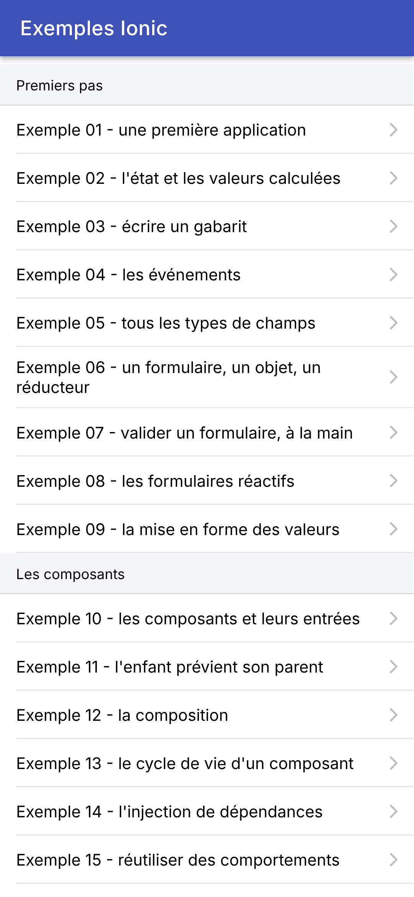
3.1.15. La page de l'exemple 01
Un exemple, c'est une page, c'est-à-dire un composant, routé à son adresse. Celui de l'exemple 01 :
| // =========================================================================
// src/app/ex01-premiere-application/ex01.page.ts - une première application
// -------------------------------------------------------------------------
// Une page Ionic est un COMPOSANT Angular : une classe TypeScript, décorée
// par @Component, associée à un GABARIT (template) HTML qui décrit ce
// qu'elle affiche. Le gabarit mêle des balises HTML ordinaires, des
// composants d'Ionic (<ion-button>, <ion-card>...) et des expressions
// {{ ... }} qui affichent les données de la classe.
// Les données qui changent sont des SIGNAUX : quand la valeur d'un signal
// change, Angular met à jour, dans l'écran, ce qui l'affiche.
// =========================================================================
import { Component, signal } from '@angular/core';
import {
IonBackButton, IonButton, IonButtons, IonContent, IonHeader, IonText, IonTitle, IonToolbar,
} from '@ionic/angular';
// des données "ordinaires", hors du composant : elles ne changent jamais
const titre = 'Bienvenue dans Ionic';
const langages = ['TypeScript', 'Angular', 'Ionic'];
// "12:05:09" : l'heure courante, sur deux chiffres
function heureCourante(): string {
const d = new Date();
const deuxChiffres = (n: number) => n.toString().padStart(2, '0');
return `${deuxChiffres(d.getHours())}:${deuxChiffres(d.getMinutes())}:${deuxChiffres(d.getSeconds())}`;
}
@Component({
// le nom de la balise du composant (<app-ex01>) : le routeur l'insère
// lui-même, on ne l'écrit jamais
selector: 'app-ex01',
// les composants d'Ionic utilisés par le gabarit : un composant ne
// connaît que ce qu'il importe
imports: [IonHeader, IonToolbar, IonButtons, IonBackButton, IonTitle, IonContent, IonButton, IonText],
// le gabarit, dans un fichier à part
templateUrl: './ex01.page.html',
})
export class Ex01Page {
// des données lues par le gabarit : de simples champs de la classe
readonly titre = titre;
readonly langages = langages;
// l'ÉTAT : des signaux. signal(0) crée un signal de valeur initiale 0 ;
// on lit sa valeur en l'appelant comme une fonction : compteur()
readonly compteur = signal(0);
readonly heure = signal(heureCourante());
// la méthode appelée par le bouton
incrementer(): void {
// set : la nouvelle valeur ; update : la nouvelle valeur, calculée à
// partir de l'ancienne. Angular met alors l'écran à jour : on ne le
// modifie jamais soi-même
this.compteur.update((n) => n + 1);
this.heure.set(heureCourante());
}
}
|
- ligne 13 : [Component] (le décorateur des composants) et [signal] viennent du cœur d'[Angular] ;
- lignes 14-16 : les composants d'[Ionic] utilisés par le gabarit ;
- lignes 19-20 : deux données ordinaires, déclarées hors du composant : elles ne changent jamais. [const] : une variable qu'on n'affecte qu'une fois ;
- lignes 23-27 : une fonction ordinaire, qui renvoie l'heure courante sous la forme « 12:05:09 ». Elle contient elle-même une petite fonction fléchée, [deuxChiffres]. [
...${expression}...] est un gabarit de chaîne : la valeur de chaque expression y est insérée ;
- lignes 29-38 : le décorateur [@Component] : la balise du composant (ligne 32, que le routeur insère lui-même : on ne l'écrit jamais), les composants d'[Ionic] qu'utilise son gabarit (ligne 35), et le fichier de son gabarit (ligne 37) ;
- ligne 39 : la classe du composant. [export] : le fichier des routes l'importe ;
- lignes 41-42 : deux champs de la classe, lus par le gabarit. [readonly] : on ne les réaffectera pas ;
- lignes 46-47 : l'**état** du composant, les données qui changent : deux **signaux**. [signal(0)] crée un signal de valeur initiale 0, dont le type ([number]) est déduit de cette valeur. On lit la valeur d'un signal en l'appelant comme une fonction : [compteur()] ;
- lignes 50-56 : la méthode appelée par le bouton. Elle ne touche pas à l'écran : elle change l'état. [update] calcule la nouvelle valeur à partir de l'ancienne (ligne 54), [set] la donne directement (ligne 55). [Angular] sait alors que les parties de l'écran qui lisent ces signaux sont à refaire, et les refait.
Le gabarit :
| <!-- ======================================================================
ex01.page.html - le gabarit de la page de l'exemple 01
====================================================================== -->
<!-- ion-header : la barre du haut, avec un bouton Retour et un titre -->
<ion-header>
<ion-toolbar color="primary">
<ion-buttons slot="start">
<!-- le bouton Retour : il ramène au menu des exemples (defaultHref)
si l'on est arrivé directement sur cette page -->
<ion-back-button defaultHref="/" />
</ion-buttons>
<ion-title>Exemple 01 - une première application</ion-title>
</ion-toolbar>
</ion-header>
<!-- ion-content : le corps de la page, qui défile si besoin ;
ion-padding : une marge tout autour -->
<ion-content class="ion-padding">
<h2>{{ titre }}</h2>
<p>Cet écran est fabriqué par Ionic et Angular, à partir du composant Ex01Page et de son gabarit.</p>
<!-- {{ expression }} : la valeur d'une expression TypeScript, insérée dans le texte -->
<p>On y écrit du {{ langages.join(', ') }} ({{ langages.length }} langages).</p>
<!-- (click) : la méthode à appeler quand on appuie sur le bouton (cf. exemple 04) -->
<ion-button (click)="incrementer()">Cliquez-moi</ion-button>
<p>
<!-- compteur() : on LIT un signal en l'appelant -->
<ion-text color="primary">
<strong>Vous avez cliqué {{ compteur() }} fois (dernier clic : {{ heure() }}).</strong>
</ion-text>
</p>
</ion-content>
|
- lignes 6-15 : la barre du haut. [<ion-buttons slot="start">] place des boutons au début de la barre (à gauche) : un bouton Retour, [<ion-back-button>], qui ramène à la page précédente. S'il n'y en a pas (on a tapé directement l'adresse [/ex01]), [defaultHref] donne la page où aller : le menu ;
- ligne 19 : le corps de la page, avec une marge tout autour (la classe [ion-padding]) ;
- ligne 20 : [{{ titre }}] : une « interpolation » : la valeur d'une expression, insérée dans le texte. L'expression est évaluée dans le contexte de la classe : [titre] est le champ de la ligne 41 du composant ;
- ligne 23 : une expression peut appeler des méthodes : [langages.join(', ')], [langages.length] ;
- ligne 26 : [(click)="incrementer()"] : quand on appuie sur le bouton, [Angular] exécute l'instruction écrite entre les guillemets. On écrit l'appel, avec ses parenthèses : l'instruction n'est exécutée qu'au moment de l'appui (cf. exemple 04) ;
- lignes 30-32 : un texte qui dépend de l'état. [compteur()] lit le signal : quand il change, ce texte change. [<ion-text color="primary">] colore son contenu.
L'arbre des composants de l'écran, tel que le montre l'extension [Angular DevTools] des outils de développement de [Chrome] (onglet [Angular]), complété des éléments HTML :
| App (app-root)
└── ion-app
└── ion-router-outlet
└── Ex01Page (app-ex01)
├── ion-header
│ └── ion-toolbar
│ ├── ion-buttons
│ │ └── ion-back-button
│ └── ion-title
└── ion-content
├── h2 (le titre)
├── p
├── p
├── ion-button
└── p
└── ion-text
└── strong (le compteur)
|
Comme avec [Flutter], on écrit peu de code « qui fait » et beaucoup de code « qui décrit ». Mais là où [Flutter] décrit l'écran en [Dart], par des constructeurs de widgets imbriqués, [Angular] sépare les deux : la classe [TypeScript] porte les données et les comportements, le gabarit [HTML] décrit l'écran. Les composants d'[Ionic] ([<ion-button>], [<ion-toolbar>]...) sont de vrais éléments HTML, des « composants web » (« Web Components ») fabriqués par la bibliothèque [@ionic/core] : ils fonctionnent dans n'importe quel navigateur, et [@ionic/angular] les enveloppe pour qu'[Angular] les manie comme ses propres composants. C'est pourquoi le même [Ionic] existe aussi pour [React] et [Vue.js].
3.1.16. Exécution
Dans la console ouverte sur le dossier [exemples_ionic] (les paquets ayant été installés une fois par [npm install]) :
La console affiche :
| > exemples-ionic@0.0.0 start
> ng serve
Initial chunk files | Names | Raw size
styles.css | styles | 56.90 kB |
main.js | main | 5.71 kB |
| Initial total | 62.61 kB
Lazy chunk files | Names | Raw size
chunk-HUSZFVBS.js | accueil-page | 7.54 kB |
chunk-J7IR5J7D.js | ex01-page | 6.37 kB |
...
Application bundle generation complete. [6.222 seconds]
Watch mode enabled. Watching for file changes...
➜ Local: http://localhost:8100/
|
L'application est compilée en quelques secondes : un fichier [main.js] chargé au démarrage, et un petit fichier par page (« lazy chunk »), chargé à la demande. On ouvre l'adresse [http://localhost:8100] dans [Chrome]. Pour voir l'application à la taille d'un téléphone, on ouvre les outils de développement (F12), puis la barre d'émulation des appareils (Ctrl+Maj+M), et l'on choisit un téléphone dans la liste (un [Pixel 7], par exemple), ou des dimensions (les copies d'écran de ce cours font 412 x 892 points). À gauche, l'écran de départ de l'exemple 01 ; à droite, après deux appuis sur le bouton :
Deux expériences à faire :
- modifier le texte de la ligne 21 de [ex01.page.html] et enregistrer le fichier : la console affiche [Component update sent to client(s)], et l'écran change aussitôt, le compteur gardant sa valeur. C'est le rechargement à chaud : le nouveau gabarit remplace l'ancien dans l'application en cours d'exécution. Une modification du code [TypeScript] ([ex01.page.ts]), elle, recharge toute la page ([Page reload sent to client(s)]) : le compteur repart de 0, comme avec le « hot restart » de [Flutter] ;
- explorer l'application avec les outils de développement : l'onglet [Elements] montre les balises [<ion-...>] de la page, l'onglet [Console] les erreurs éventuelles, l'onglet [Sources] le code [TypeScript] (grâce aux « source maps »), où l'on peut poser des points d'arrêt.
Sur [Android] maintenant. Il faut une première fois créer le projet [Android] :
La commande fabrique le dossier [android/] : un projet [Android Studio] complet, qui ne fait qu'afficher la WebView et y charger l'application web. On n'y touche que rarement (l'icône, les permissions). Une retouche, cependant, est nécessaire avec les versions récentes d'[Android Studio] : leur JDK est un [Java] 25, que ne connaît pas la version de [Gradle] choisie par [Capacitor] 8 (la 8.14). La construction échoue alors avec le message [Unsupported class file major version 69]. Il suffit de passer à [Gradle] 9.1, en modifiant une ligne du fichier [android/gradle/wrapper/gradle-wrapper.properties] :
| distributionUrl=https\://services.gradle.org/distributions/gradle-9.1.0-all.zip
|
(au lieu de [gradle-8.14.3-all.zip]). La première construction télécharge cette version de [Gradle] (environ 200 Mo). Puis, à chaque fois que l'application a changé :
| npx ng build
npx cap sync android
npx cap run android
|
- ligne 1 : fabrique l'application web dans le dossier [dist/exemples_ionic/browser] (configuration [production]) ;
- ligne 2 : la copie dans le projet [Android] (avec la configuration de [capacitor.config.ts] et les greffons de [Capacitor]) ;
- ligne 3 : construit l'application [Android] (avec l'outil [Gradle]), l'installe sur un émulateur démarré ou un téléphone branché, et la lance. La commande demande sur quel appareil, s'il y en a plusieurs.
Sur le téléphone, le bouton Retour ramène d'un exemple au menu, et quitte l'application depuis le menu (cf. [bouton-retour.ts]).
On peut aussi ouvrir le projet dans [Android Studio] ([npx cap open android]) et lancer l'application par son bouton [Run]. La première construction prend une ou deux minutes ; les suivantes, quelques secondes. Sur le téléphone, c'est le même écran que dans le navigateur, dessiné par le même moteur, celui de [Chrome]. On le débogue d'ailleurs avec les mêmes outils : l'adresse [chrome://inspect], dans le [Chrome] de l'ordinateur, liste les WebView des applications en cours d'exécution sur l'émulateur, et ouvre leurs outils de développement.
Ce cycle (compiler, copier, construire) n'a pas le rechargement à chaud de [ng serve]. Pour l'avoir sur le téléphone, on peut demander à l'application d'aller chercher son code sur le serveur de développement de l'ordinateur plutôt que dans sa copie embarquée :
| npx ng serve --host 0.0.0.0
npx cap run android --live-reload --host=192.168.1.20 --port=8100
|
- ligne 1 : le serveur de développement accepte les connexions venues d'autres machines que l'ordinateur lui-même (par défaut, il n'écoute que [localhost]) ;
- ligne 2 : [192.168.1.20] est l'adresse de l'ordinateur sur le réseau local ([ipconfig] sous [Windows] la donne). L'application installée charge alors [http://192.168.1.20:8100], et se recharge à chaque modification.
À utiliser avec prudence : le téléphone doit joindre l'ordinateur (même réseau Wi-Fi, pare-feu de l'ordinateur ouvert sur le port 8100), et l'application ainsi installée ne fonctionne plus sans le serveur de développement. Une fois le travail fini, on refait [npx ng build] puis [npx cap sync android], pour que l'application embarque à nouveau son propre code. Dans ce cours, on développera dans le navigateur, et l'on passera sur [Android] pour vérifier.
3.2. Exemple 02 : l'état et les valeurs calculées
L'état est le cœur d'[Angular], comme de [Flutter] et de [React]. Cet exemple calcule le prix TTC d'un article :
| // =========================================================================
// src/app/ex02-etat/ex02.page.ts - l'état et les valeurs calculées
// -------------------------------------------------------------------------
// Un petit calculateur de prix TTC :
// - l'ÉTAT : des signaux (signal()). Changer leur valeur (set, update)
// fait mettre à jour, dans l'écran, ce qui les affiche ;
// - une valeur CALCULÉE à partir de l'état n'est PAS un état : c'est un
// signal calculé (computed()), recalculé quand l'un des signaux qu'il
// lit change. Il est toujours à jour, sans rien à synchroniser ;
// - une donnée qui dépend des valeurs SUCCESSIVES de l'état (l'historique
// des totaux) se met à jour là où l'état change : dans la méthode
// changer(), par où passent tous les changements ;
// - le titre de l'application (onglet du navigateur) n'est pas dans le
// gabarit : c'est un EFFET (effect()), une fonction qu'Angular relance
// chaque fois qu'un des signaux qu'elle lit change.
// =========================================================================
import { Component, computed, DestroyRef, effect, inject, signal } from '@angular/core';
import { Title } from '@angular/platform-browser';
import {
IonBackButton, IonButton, IonButtons, IonCard, IonCardContent, IonCardHeader, IonCardSubtitle, IonCardTitle,
IonContent, IonHeader, IonIcon, IonInput, IonItem, IonLabel, IonList, IonNote, IonSegment, IonSegmentButton,
IonTitle, IonToolbar, SegmentValue,
} from '@ionic/angular';
import { addIcons } from 'ionicons';
import { add, remove } from 'ionicons/icons';
// un formateur de montants en euros, à la française (1 234,50 €), cf. exemple 09
const euros = new Intl.NumberFormat('fr-FR', { style: 'currency', currency: 'EUR' });
// les valeurs de départ (bouton Réinitialiser)
const LIBELLE = 'Stylo';
const PRIX = '2.5';
@Component({
selector: 'app-ex02',
imports: [
IonHeader, IonToolbar, IonButtons, IonBackButton, IonTitle, IonContent, IonCard, IonCardHeader, IonCardTitle,
IonCardSubtitle, IonCardContent, IonInput, IonButton, IonIcon, IonSegment, IonSegmentButton, IonList, IonItem,
IonLabel, IonNote,
],
templateUrl: './ex02.page.html',
styles: `
.quantite { display: flex; align-items: center; margin: 12px 0 8px; }
.quantite span { flex: 1; }
.quantite strong { font-size: 1.1em; min-width: 1.5em; text-align: center; }
.gras { font-weight: bold; }
ion-note { font-size: 1rem; }
`,
})
export class Ex02Page {
// l'état : quatre signaux, typés par leur valeur de départ
// (le prix est gardé sous forme de TEXTE : celui que l'on tape, virgule comprise)
readonly libelle = signal(LIBELLE);
readonly prixTexte = signal(PRIX);
readonly quantite = signal(1);
readonly tauxTVA = signal(20); // en %
// l'historique des 5 derniers changements du total TTC
readonly historique = signal<string[]>([]);
// des valeurs CALCULÉES : computed() mémorise le résultat, et ne le
// recalcule que si l'un des signaux lus a changé
readonly prixHT = computed(() => Number(this.prixTexte().replace(',', '.')) || 0);
readonly totalHT = computed(() => this.quantite() * this.prixHT());
readonly montantTVA = computed(() => (this.totalHT() * this.tauxTVA()) / 100);
readonly totalTTC = computed(() => this.totalHT() + this.montantTVA());
// les lignes de la carte des résultats : des DONNÉES, que le gabarit parcourt
readonly lignes = computed(() => [
{ libelle: 'Total HT', montant: euros.format(this.totalHT()), gras: false },
{
libelle: `TVA (${this.tauxTVA().toString().replace('.', ',')} %)`,
montant: euros.format(this.montantTVA()),
gras: false,
},
{ libelle: 'Total TTC', montant: euros.format(this.totalTTC()), gras: true },
]);
constructor() {
// les icônes utilisées par le gabarit (<ion-icon name="add" />)
addIcons({ add, remove });
// le service Title d'Angular change le titre de la page (l'onglet du
// navigateur). effect() relance la fonction chaque fois que totalTTC change
const title = inject(Title);
effect(() => title.setTitle(`TTC : ${euros.format(this.totalTTC())}`));
// quand on quitte la page (le composant est détruit), on remet le titre de l'application
inject(DestroyRef).onDestroy(() => title.setTitle('Exemples Ionic'));
}
// TOUS les changements de l'état passent par cette méthode : elle note le
// total TTC avant le changement, applique le changement, et complète
// l'historique si le total a changé
changer(changement: () => void): void {
const ancienTTC = this.totalTTC();
changement();
// lire un computed après un changement le recalcule aussitôt
const nouveauTTC = this.totalTTC();
if (nouveauTTC !== ancienTTC) {
const ligne = `${euros.format(ancienTTC)} -> ${euros.format(nouveauTTC)}`;
// un NOUVEAU tableau (et non push) : le signal voit que sa valeur a changé
this.historique.update((h) => [ligne, ...h].slice(0, 5));
}
}
// changer d'article remet la quantité à 1 : on le fait là où l'on sait
// POURQUOI l'état change
changerLibelle(nouveau: string): void {
this.changer(() => {
this.libelle.set(nouveau);
this.quantite.set(1);
});
}
changerPrix(texte: string): void {
this.changer(() => this.prixTexte.set(texte));
}
// delta : -1 ou +1
ajouterQuantite(delta: number): void {
this.changer(() => this.quantite.update((q) => q + delta));
}
// la valeur d'un segment est de type SegmentValue (string | number), ou
// undefined si aucun bouton n'est choisi : Number() la convertit en nombre
changerTaux(valeur: SegmentValue | undefined): void {
this.changer(() => this.tauxTVA.set(Number(valeur)));
}
reinitialiser(): void {
this.changer(() => {
this.libelle.set(LIBELLE);
this.prixTexte.set(PRIX);
this.quantite.set(1);
this.tauxTVA.set(20);
});
}
}
|
- ligne 18 : les fonctions d'[Angular] utilisées : [signal], [computed], [effect], [inject], et [DestroyRef] ;
- ligne 19 : le service [Title], qui donne accès au titre de la page ;
- lignes 25-26 : les icônes. [Ionic] ne livre avec l'application que les icônes qu'elle déclare : on les importe de [ionicons/icons] (ici [add], le « + », et [remove], le « - ») et on les enregistre par [addIcons] (ligne 80) ; le gabarit les désigne ensuite par leur nom ([<ion-icon name="add" />]) ;
- ligne 29 : un formateur de montants, à la française (1 234,50 €), créé une fois pour toutes hors du composant, avec l'API [Intl] de JavaScript (cf. exemple 09) ;
- lignes 43-49 : des styles propres à ce composant. [Angular] les « encapsule » : la classe [.gras] de ce composant ne s'applique qu'à son gabarit, et ne déborde pas sur les autres pages ;
- lignes 54-57 : quatre données d'état, quatre signaux. Leur type est déduit de leur valeur de départ : [signal('Stylo')] est un signal de chaînes, [signal(1)] un signal de nombres. [TypeScript] n'a qu'un type de nombres, [number]. Le prix est gardé tel qu'on le tape, sous forme de texte : on verra pourquoi ;
- ligne 59 : l'historique des cinq derniers changements du total. [signal<string[]>([])] : quand la valeur de départ ne suffit pas à en déduire le type (un tableau vide, de quoi ?), on le donne entre chevrons ;
- lignes 63-66 : quatre valeurs **calculées** à partir de l'état. Ce ne sont PAS des états : ce sont des signaux calculés, [computed(() => ...)]. [Angular] note les signaux que lit la fonction (ici, [prixTexte], puis [quantite] et [prixHT]...) et ne la rappelle que si l'un d'eux a changé ; sinon, il redonne le résultat mémorisé. Un signal calculé se lit comme un autre ([totalTTC()]), mais ne s'écrit pas. C'est la règle déjà rencontrée avec [Flutter] et [React] : on ne range dans l'état que ce qu'on ne peut pas calculer ; tout le reste se calcule ;
- ligne 63 : le prix, déduit du texte tapé. [Number('3.2')] convertit un texte en nombre, et renvoie [NaN] (« not a number ») si le texte n'en est pas un : [|| 0] remplace alors [NaN] (et 0) par 0. On accepte la virgule française en la remplaçant par un point ;
- lignes 68-76 : les trois lignes de la carte des résultats, sous forme de données : un tableau d'objets, que le gabarit parcourra. Le libellé de la TVA dépend du taux : c'est lui aussi une valeur calculée ;
- lignes 84-85 : le titre de la page (l'onglet du navigateur) suit le total. Le titre n'est pas dans le gabarit de la page : c'est un **effet** de bord, que l'on confie à [effect()]. Comme [computed], [effect] note les signaux que lit sa fonction, et la rappelle chaque fois que l'un d'eux change. Le service [Title] est obtenu par [inject(Title)], l'injection de dépendances d'[Angular] (exemple 14) ; [inject] ne s'appelle que pendant la construction du composant ;
- ligne 87 : quand on quitte la page, le composant est détruit ; [DestroyRef.onDestroy] enregistre une fonction appelée à ce moment-là, qui remet le titre de l'application. L'effet, lui, est arrêté automatiquement ;
- lignes 93-103 : l'historique des totaux dépend des valeurs **successives** du total, ce qu'un signal calculé ne sait pas exprimer. On fait donc passer TOUS les changements de l'état par la méthode [changer], qui reçoit en paramètre le changement à faire, une fonction sans paramètre ni résultat (de type [() => void]) : elle note le total avant, applique le changement, lit le total après (un signal calculé lu après un changement est aussitôt recalculé), et complète l'historique s'il a changé. C'est l'endroit naturel pour ce calcul : là où l'état change ;
- ligne 101 : [update] reçoit l'ancien tableau et renvoie le nouveau : la nouvelle ligne, suivie des anciennes ([...h] les « étale »), dont on ne garde que les cinq premières. On fabrique un NOUVEAU tableau, au lieu de modifier l'ancien par [push] : un signal compare l'ancienne valeur à la nouvelle pour savoir si elle a changé, et un tableau modifié sur place resterait, pour lui, le même tableau ;
- lignes 107-112 : changer d'article remet la quantité à 1. On le fait dans la méthode qui traite le changement du champ, là où l'on sait pourquoi l'état change ;
- lignes 125-127 : le taux choisi dans les boutons segmentés. Sa valeur est de type [SegmentValue] (une chaîne ou un nombre), ou [undefined] si aucun bouton n'est choisi : [Number] la convertit en nombre ;
- lignes 129-136 : plusieurs changements d'état à la suite : [Angular] ne mettra l'écran à jour qu'une fois, après la méthode.
Le gabarit :
| <!-- ======================================================================
ex02.page.html - le gabarit du calculateur de prix TTC
====================================================================== -->
<ion-header>
<ion-toolbar color="primary">
<ion-buttons slot="start">
<ion-back-button defaultHref="/" />
</ion-buttons>
<ion-title>Exemple 02 - l'état</ion-title>
</ion-toolbar>
</ion-header>
<ion-content class="ion-padding">
<ion-card>
<ion-card-content>
<!-- [value] : le champ AFFICHE la valeur du signal ;
(ionInput) : appelé à chaque frappe ; $event.detail.value est le nouveau texte -->
<ion-input label="Article" labelPlacement="floating" [value]="libelle()"
(ionInput)="changerLibelle($event.detail.value ?? '')" />
<!-- inputmode="decimal" : le clavier numérique du téléphone, avec la virgule -->
<ion-input label="Prix unitaire HT" labelPlacement="floating" inputmode="decimal" [value]="prixTexte()"
(ionInput)="changerPrix($event.detail.value ?? '')" />
<div class="quantite">
<span>Quantité (revient à 1 si l'article change)</span>
<!-- [disabled] : le bouton est désactivé tant que la condition est vraie -->
<ion-button fill="clear" [disabled]="quantite() <= 0" (click)="ajouterQuantite(-1)">
<ion-icon slot="icon-only" name="remove" />
</ion-button>
<strong>{{ quantite() }}</strong>
<ion-button fill="clear" (click)="ajouterQuantite(1)">
<ion-icon slot="icon-only" name="add" />
</ion-button>
</div>
<!-- des boutons dont UN seul est sélectionné : le taux de TVA -->
<ion-segment [value]="tauxTVA()" (ionChange)="changerTaux($event.detail.value)">
<ion-segment-button [value]="5.5"><ion-label>5,5 %</ion-label></ion-segment-button>
<ion-segment-button [value]="10"><ion-label>10 %</ion-label></ion-segment-button>
<ion-segment-button [value]="20"><ion-label>20 %</ion-label></ion-segment-button>
</ion-segment>
<div class="ion-text-center ion-margin-top">
<ion-button fill="outline" shape="round" (click)="reinitialiser()">Réinitialiser</ion-button>
</div>
</ion-card-content>
</ion-card>
<ion-card>
<ion-card-header>
<!-- {{ }} : on lit les signaux en les appelant -->
<ion-card-title>{{ quantite() }} x {{ libelle() }}</ion-card-title>
</ion-card-header>
<ion-list lines="none">
<!-- une ligne par élément du tableau calculé lignes() (cf. exemple 03) -->
@for (ligne of lignes(); track ligne.libelle) {
<ion-item>
<ion-label [class.gras]="ligne.gras">{{ ligne.libelle }}</ion-label>
<ion-note slot="end" color="dark" [class.gras]="ligne.gras">{{ ligne.montant }}</ion-note>
</ion-item>
}
</ion-list>
</ion-card>
<ion-card>
<ion-card-header>
<ion-card-subtitle>Historique du total TTC</ion-card-subtitle>
</ion-card-header>
<ion-card-content>
@for (ligne of historique(); track $index) {
<div>• {{ ligne }}</div>
}
</ion-card-content>
</ion-card>
</ion-content>
|
- ligne 15 : [<ion-card>], une carte : un bloc à coins arrondis, légèrement en relief ;
- lignes 19-20 : un champ de saisie, [<ion-input>], avec son libellé ([label]) qui « flotte » au-dessus du texte ([labelPlacement="floating"]). [[value]="libelle()"] est une liaison de propriété : la propriété [value] du composant reçoit la valeur de l'expression, et la reçoit à nouveau chaque fois qu'elle change. [(ionInput)] est l'événement émis à chaque frappe ; [$event] est l'objet événement, dont la propriété [detail.value] contient le nouveau texte (une chaîne, [null] ou [undefined] : [?? ''] remplace ces deux derniers par une chaîne vide). Le champ est ainsi **contrôlé** : il affiche l'état, et prévient de chaque changement ;
- lignes 22-23 : le prix. [inputmode="decimal"] choisit le clavier du téléphone : le clavier numérique, avec la virgule. Si le champ était relié au prix (un nombre), la saisie de « 3,2 » donnerait 3.2, que la liaison [[value]] réécrirait dans le champ : « 3.2 ». Relié au texte tapé, le champ garde ce que l'utilisateur a écrit ;
- lignes 25-35 : la quantité, avec deux boutons « - » et « + ». [fill="clear"] : un bouton sans fond ; [slot="icon-only"] : l'icône est tout son contenu. [[disabled]] désactive le bouton tant que l'expression est vraie : on ne peut pas descendre sous 0 ;
- lignes 38-42 : le taux de TVA, trois boutons « segmentés » dont un seul est choisi, [<ion-segment>]. Sa valeur est celle du bouton choisi ; [(ionChange)] est émis quand on en choisit un autre. [[value]="5.5"] donne au bouton le NOMBRE 5.5 ; [value="5.5"], sans crochets, lui donnerait la chaîne « 5.5 » ;
- ligne 45 : le bouton Réinitialiser, entouré d'un trait ([fill="outline"]) et arrondi ([shape="round"]) ;
- ligne 53 : [{{ quantite() }} x {{ libelle() }}] : deux signaux, lus dans le texte ;
- lignes 57-62 : une ligne de liste par élément du tableau calculé [lignes()] ([@for], cf. exemple 03). [<ion-note slot="end">] place le montant au bout de la ligne ; [[class.gras]] pose la classe CSS [gras] si l'expression est vraie ;
- lignes 71-73 : une ligne de texte par élément de l'historique.
On modifie la quantité (deux appuis sur « + »), le taux (10 %) et le prix (3,2), puis l'article :
À chaque changement du total TTC, une ligne s'ajoute à l'historique. Changer l'article remet la quantité à 1 (à droite). Pendant ce temps, l'onglet du navigateur affiche « TTC : 10,56 € », puis « TTC : 3,52 € » ; de retour au menu, il affiche à nouveau « Exemples Ionic ».
Les signaux d'[Angular] tiennent à la fois de [Flutter] et de [React]. Comme en [Flutter], l'état vit dans un **objet** (le composant), créé une fois et conservé : ce sont ses champs, et il n'y a ni hooks ni règles d'appel. Mais là où [Flutter] rappelle tout le [build] quand on appelle [setState], sans savoir ce qui a changé, un signal sait qui le lit : [Angular] ne met à jour que les morceaux du gabarit qui dépendent du signal modifié. Il n'y a donc pas de [setState] à appeler : écrire dans un signal ([set], [update]) suffit. [computed] est le pendant des getters de [Flutter] (et du [useMemo] de [React]), avec la mémorisation en plus ; [effect] est le pendant du [useEffect] de [React], sans la liste des dépendances à tenir à jour, puisque l'effet les découvre lui-même. Le titre de la page est un cas où [Flutter] est plus simple : son titre est un widget, [Title], décrit par [build] comme le reste de l'écran ; celui d'une page web appartient au document ([document.title]), hors du gabarit du composant, d'où l'effet.
3.3. Exemple 03 : écrire un gabarit
[Flutter] n'a pas de langage de gabarits : l'écran y est écrit en [Dart]. [Angular] en a un : du HTML, enrichi d'une syntaxe propre à [Angular] pour les liaisons, les conditions et les boucles. Cet exemple affiche une liste de médecins, qu'on peut filtrer :
| // =========================================================================
// src/app/ex03-gabarits/ex03.page.ts - écrire un gabarit
// -------------------------------------------------------------------------
// Le gabarit d'un composant Angular est du HTML, enrichi d'une syntaxe
// propre à Angular (cf. ex03.page.html) :
// - {{ expression }} : une valeur insérée dans le texte ;
// - [propriété]="expression" : une propriété d'un élément liée à une
// expression ([class.x], [style.x] pour
// une classe CSS ou un style) ;
// - @if / @else if / @else : un bloc qui n'EXISTE que si la
// condition est vraie ;
// - @for (x of liste; track ...) : un bloc par élément de la liste ;
// - @switch / @case : un bloc parmi plusieurs, selon une valeur ;
// - @let nom = expression : une variable locale du gabarit.
// Les expressions du gabarit ne voient que les membres (publics ou
// protégés) de la classe : les données, les signaux, les méthodes.
// =========================================================================
import { Component, computed, signal } from '@angular/core';
import {
IonAvatar, IonBackButton, IonButton, IonButtons, IonCard, IonCardContent, IonChip, IonContent, IonHeader, IonIcon,
IonItem, IonLabel, IonList, IonSearchbar, IonText, IonTitle, IonToggle, IonToolbar,
} from '@ionic/angular';
import { addIcons } from 'ionicons';
import { happy, heart, medkit } from 'ionicons/icons';
// un "type union" de chaînes : les seules valeurs possibles d'une spécialité
type Specialite = 'generaliste' | 'pediatre' | 'cardiologue';
// la forme d'un médecin : une interface (elle n'existe que pour le compilateur)
interface Medecin {
readonly id: number;
readonly titre: string;
readonly prenom: string;
readonly nom: string;
readonly specialite: Specialite;
readonly disponible: boolean;
}
const medecins: readonly Medecin[] = [
{ id: 1, titre: 'Mme', prenom: 'Marie', nom: 'PELISSIER', specialite: 'generaliste', disponible: true },
{ id: 2, titre: 'Mr', prenom: 'Paul', nom: 'TATOU', specialite: 'pediatre', disponible: false },
{ id: 3, titre: 'Melle', prenom: 'Sophie', nom: 'DUPONT', specialite: 'cardiologue', disponible: true },
];
// "une valeur parmi plusieurs, selon une valeur" : un objet de type
// Record<Specialite, string>. Le compilateur vérifie que toutes les
// spécialités ont leur libellé (en oublier une est une erreur)
const libelles: Record<Specialite, string> = {
generaliste: 'généraliste',
pediatre: 'pédiatre',
cardiologue: 'cardiologue',
};
@Component({
selector: 'app-ex03',
imports: [
IonHeader, IonToolbar, IonButtons, IonBackButton, IonTitle, IonContent, IonSearchbar, IonItem, IonToggle,
IonButton, IonCard, IonCardContent, IonText, IonList, IonAvatar, IonLabel, IonIcon, IonChip,
],
templateUrl: './ex03.page.html',
styles: `
.logo { width: 32px; height: 32px; margin-inline-start: 8px; }
.aide { background: #e1f5fe; box-shadow: none; }
.indisponible { opacity: 0.5; }
.rang {
display: flex; align-items: center; justify-content: center;
height: 100%; border-radius: 50%; background: #e8eaf6;
}
.specialite { display: flex; align-items: center; gap: 6px; }
`,
})
export class Ex03Page {
// les données, lues par le gabarit
readonly medecins = medecins;
// l'état de l'écran
readonly filtre = signal(''); // le texte recherché
readonly seulementDisponibles = signal(false);
readonly afficherAide = signal(true);
// la liste affichée : une valeur CALCULÉE, recalculée quand le filtre ou
// l'interrupteur changent. filter garde les éléments qui vérifient une condition
readonly affiches = computed(() => {
const texte = this.filtre().trim().toLowerCase();
return medecins.filter(
(m) =>
(!this.seulementDisponibles() || m.disponible) &&
`${m.prenom} ${m.nom} ${libelles[m.specialite]}`.toLowerCase().includes(texte),
);
});
constructor() {
addIcons({ happy, heart, medkit });
}
// une méthode appelée par le gabarit
libelle(s: Specialite): string {
return libelles[s];
}
}
|
- ligne 28 : un type « union » de chaînes : les trois seules valeurs possibles d'une spécialité. C'est le pendant de l'énumération de [Dart] : [let s: Specialite = 'dentiste'] est une erreur de compilation ;
- lignes 31-38 : une interface décrit la forme d'un médecin. Ses champs sont [readonly] : un médecin ne change jamais. L'interface n'existe que pour le compilateur, qui vérifie que chaque médecin a tous ses champs, avec le bon type ; elle disparaît du code compilé ;
- lignes 40-44 : les médecins, des objets littéraux. [readonly Medecin[]] : un tableau qu'on ne modifie pas (ni ajout, ni retrait) ;
- lignes 49-53 : « une valeur parmi plusieurs, selon une valeur » : un objet dont les clés sont les spécialités. [Record<Specialite, string>] est le type d'un objet qui a une propriété de type [string] pour CHAQUE spécialité : en oublier une, ou en ajouter une sans compléter cet objet, serait une erreur de compilation, comme pour le [switch] de [Dart] ;
- lignes 62-71 : les styles du composant : [logo] (la taille de l'image de la barre du haut), [aide] (le fond bleu clair de la carte d'aide), [indisponible] (un médecin à moitié transparent), [rang] (un disque autour du rang) ;
- ligne 75 : les médecins, offerts au gabarit. Le gabarit ne voit que les membres de la classe : pas les constantes du fichier ;
- lignes 78-80 : l'état de l'écran ;
- lignes 84-91 : la liste affichée : une valeur calculée, recalculée quand le filtre ou l'interrupteur changent. [filter] garde les éléments du tableau qui vérifient une condition ; [includes] dit si une chaîne en contient une autre ;
- lignes 98-100 : une méthode, que le gabarit appellera : le libellé d'une spécialité.
Le gabarit :
| <!-- ======================================================================
ex03.page.html - la liste des médecins, filtrée
====================================================================== -->
<ion-header>
<ion-toolbar color="primary">
<ion-buttons slot="start">
<ion-back-button defaultHref="/" />
<!-- une image SVG livrée avec l'application (dossier public/ du projet) -->
<img class="logo" src="ex03/medecin.svg" alt="" />
</ion-buttons>
<ion-title>Exemple 03 - les gabarits</ion-title>
</ion-toolbar>
</ion-header>
<ion-content class="ion-padding">
<!-- ion-searchbar : un champ de recherche, avec sa loupe -->
<ion-searchbar placeholder="rechercher..." [value]="filtre()" (ionInput)="filtre.set($event.detail.value ?? '')" />
<!-- un interrupteur, avec son libellé -->
<ion-item lines="none">
<ion-toggle [checked]="seulementDisponibles()" (ionChange)="seulementDisponibles.set($event.detail.checked)">
disponibles seulement
</ion-toggle>
</ion-item>
<ion-button fill="clear" size="small" (click)="afficherAide.set(!afficherAide())">
{{ afficherAide() ? "Cacher l'aide" : "Montrer l'aide" }}
</ion-button>
<!-- @if : cette carte n'EXISTE que si afficherAide() est vrai -->
@if (afficherAide()) {
<ion-card class="aide">
<ion-card-content>Tapez un nom ou une spécialité. Les médecins indisponibles sont grisés.</ion-card-content>
</ion-card>
}
<!-- un bloc parmi trois : @if / @else if / @else -->
@if (medecins.length === 0) {
<p>Aucun médecin.</p>
} @else if (affiches().length === 0) {
<p><ion-text color="danger">Aucun médecin ne correspond à « {{ filtre() }} ».</ion-text></p>
} @else {
<ion-list>
<!-- un élément par médecin ; track : l'IDENTITÉ de chaque élément (cf. exemple 04) ;
$index : le rang de l'élément (0, 1, 2...) -->
@for (m of affiches(); track m.id; let i = $index) {
<!-- [class.indisponible] : la classe CSS est posée si l'expression est vraie -->
<ion-item [class.indisponible]="!m.disponible">
<ion-avatar slot="start">
<div class="rang">{{ i + 1 }}</div>
</ion-avatar>
<ion-label>
<h2>{{ m.titre }} {{ m.prenom }} {{ m.nom }}</h2>
<p class="specialite">
<!-- @switch : une icône parmi plusieurs, selon la spécialité -->
@switch (m.specialite) {
@case ('pediatre') { <ion-icon name="happy" style="color: orange" /> }
@case ('cardiologue') { <ion-icon name="heart" style="color: red" /> }
@default { <ion-icon name="medkit" style="color: teal" /> }
}
{{ libelle(m.specialite) }}
</p>
</ion-label>
<!-- [color] : une propriété calculée par une expression conditionnelle -->
<ion-chip slot="end" [color]="m.disponible ? 'success' : 'medium'">
{{ m.disponible ? 'disponible' : 'indisponible' }}
</ion-chip>
</ion-item>
}
</ion-list>
}
<!-- @let : une variable du gabarit ; [style.font-size.px] : un style CALCULÉ,
la taille du texte dépend du nombre de médecins affichés -->
@let nombre = affiches().length;
<p [style.font-size.px]="12 + nombre * 2">{{ nombre }} médecin(s) affiché(s) - la taille de ce texte en dépend.</p>
</ion-content>
|
- ligne 10 : une image SVG, livrée avec l'application : le fichier [public/ex03/medecin.svg] du projet, copié tel quel dans l'application compilée (cf. le fichier [angular.json]). Le navigateur sait afficher le SVG ; une simple balise [<img>] suffit ;
- ligne 18 : [<ion-searchbar>], un champ de recherche, avec sa loupe, son texte d'invite ([placeholder]), et une croix pour l'effacer. [filtre.set(...)] : une instruction d'un gabarit peut écrire dans un signal ;
- lignes 21-25 : un interrupteur, [<ion-toggle>], et son libellé (le contenu de la balise). [(ionChange)] est émis quand on le bascule ; [$event.detail.checked] est sa nouvelle valeur, [true] ou [false] ;
- lignes 27-29 : un bouton sans fond, dont le texte dépend de l'état : une expression conditionnelle [? :] dans une interpolation ;
- lignes 32-36 : [@if (condition) { ... }] : la carte d'aide n'**existe** que si [afficherAide()] est vrai. Il n'y a pas de carte « cachée » : quand la condition est fausse, la carte est retirée de la page, et recréée quand elle redevient vraie ;
- lignes 39-72 : un bloc parmi trois, avec [@if], [@else if] et [@else] ;
- ligne 42 : [<ion-text color="danger">] : un texte coloré, ici en rouge ;
- ligne 47 : [@for (m of affiches(); track m.id; let i = $index)] répète son bloc pour chaque médecin affiché. [track] donne l'identité de chaque élément (son [id]) : quand la liste change, [Angular] s'en sert pour savoir quels éléments il peut garder, déplacer ou supprimer (cf. exemple 04). [$index] est le rang de l'élément (0, 1, 2...), que [let i = $index] renomme [i] ;
- ligne 49 : [[class.indisponible]="!m.disponible"] : la classe CSS [indisponible] est posée sur l'élément si l'expression est vraie, et retirée sinon : les médecins indisponibles sont grisés ;
- lignes 49-69 : [<ion-item>] est la ligne de liste d'[Ionic]. Ses emplacements ([slot]) placent son contenu : [slot="start"] en tête (ici, un disque avec le rang, dans un [<ion-avatar>]), [slot="end"] au bout (une puce, [<ion-chip>]). Entre les deux, [<ion-label>] contient le titre ([<h2>]) et un sous-titre ([<p>]), qu'[Ionic] met en forme ;
- lignes 57-61 : [@switch (valeur)] choisit un bloc parmi plusieurs selon une valeur : le premier [@case] égal à la valeur, sinon le bloc [@default]. Ici, l'icône de la spécialité ;
- ligne 62 : l'appel d'une méthode de la classe ;
- ligne 66 : [[color]] : une propriété dont la valeur est calculée par une expression conditionnelle ;
- ligne 76 : [@let nombre = affiches().length;] déclare une variable du gabarit, utilisable dans la suite du gabarit : on évite d'écrire deux fois la même expression ;
- ligne 77 : [[style.font-size.px]] : un style calculé. La taille du texte, en pixels, dépend du nombre de médecins affichés.
Pour résumer ce qu'on écrit dans un gabarit [Angular] et ce qui en tient lieu en [Dart] :
Angular (gabarit) | Flutter (Dart) | Rôle |
{{ expression }} | Text('$x') | une valeur, insérée dans le texte |
[propriété]="expression" | paramètre: expression | une propriété liée à une expression |
[class.x]="c", [style.x]="v" | style: c ? ... : ... | une classe CSS, un style, calculés |
@if (c) { ... } | if (c) widget | un bloc qui n'existe que si la condition est vraie |
@if (c) { A } @else { B } | if (c) A else B | l'un ou l'autre |
c ? a : b | c ? a : b | l'un ou l'autre, dans une expression |
@for (x of liste; track x.id) { ... } | for (final x in liste) widget | un bloc par élément de la liste |
@switch (v) { @case (a) { ... } } | switch (v) { a => widget } | un bloc parmi plusieurs, selon une valeur |
@let n = expression; | final n = ...; (avant le return) | une variable locale |
Au démarrage, puis après avoir tapé « gén » et caché l'aide, puis avec « xyz » :
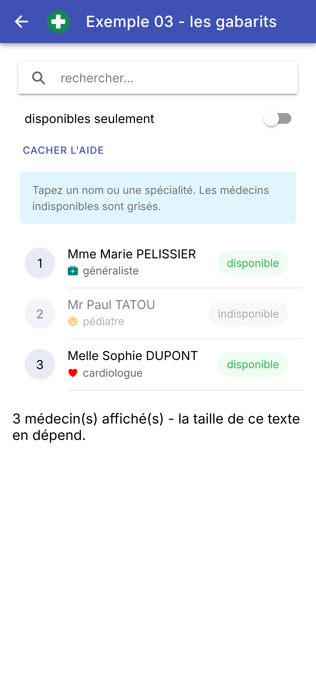 | 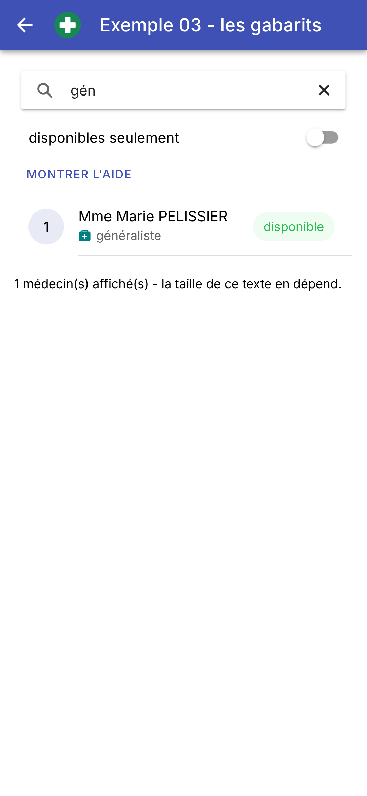 | 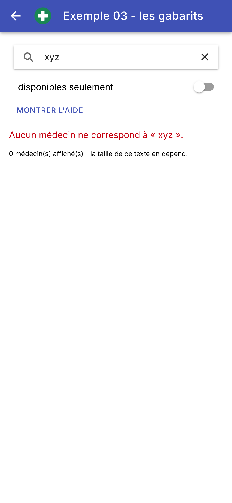 |
Le gabarit d'[Angular] est plus proche du HTML que le JSX de [React] (où les conditions et les boucles s'écrivent en JavaScript, avec [&&], [? :] et [map]) et que l'arbre de widgets de [Flutter] (écrit en [Dart]). Le prix à payer est une syntaxe de plus à apprendre ; le bénéfice, un gabarit lisible par quiconque connaît le HTML, et vérifié par le compilateur ([strictTemplates]) : un nom de propriété mal orthographié, ou une expression du mauvais type, sont signalés dès la compilation.
3.4. Exemple 04 : les événements
Dans un gabarit, [(événement)="instruction"] exécute l'instruction quand l'élément émet l'événement. Cet exemple gère une liste de tâches :
| // =========================================================================
// src/app/ex04-evenements/ex04.page.ts - réagir aux actions de l'utilisateur
// -------------------------------------------------------------------------
// Dans le gabarit, (événement)="instruction" exécute l'instruction quand
// l'élément émet l'événement :
// - (click)="ajouter()" : un appui sur un bouton ;
// - (click)="supprimer(t, 'x')" : on passe ses propres arguments ;
// - (ionChange)="f($event)" : $event est l'objet événement, ici un
// CustomEvent dont detail porte la donnée
// (la case cochée, le texte...) ;
// - (keyup.enter), (keyup.escape) : une touche précise du clavier ;
// - (dblclick), (contextmenu) : les événements du navigateur, sur
// N'IMPORTE QUEL élément ;
// - ion-item-sliding : faire glisser une ligne pour la retirer,
// le geste typique d'un mobile.
// Pour agir sur un champ de saisie depuis le code (lui donner le focus), on
// le désigne par une variable de gabarit (#champ) et on le récupère dans la
// classe par viewChild().
// =========================================================================
import { Component, signal, viewChild } from '@angular/core';
import {
CheckboxCustomEvent, IonBackButton, IonButton, IonButtons, IonCheckbox, IonContent, IonHeader, IonIcon, IonInput,
IonItem, IonItemOption, IonItemOptions, IonItemSliding, IonList, IonTitle, IonToolbar,
} from '@ionic/angular';
import { addIcons } from 'ionicons';
import { trash, trashOutline } from 'ionicons/icons';
interface Tache {
readonly id: number;
readonly libelle: string;
readonly faite: boolean;
}
// "15:30" : l'heure courante, à la française
function heure(): string {
return new Date().toLocaleTimeString('fr-FR', { hour: '2-digit', minute: '2-digit' });
}
@Component({
selector: 'app-ex04',
imports: [
IonHeader, IonToolbar, IonButtons, IonBackButton, IonTitle, IonContent, IonInput, IonButton, IonList,
IonItemSliding, IonItem, IonCheckbox, IonIcon, IonItemOptions, IonItemOption,
],
templateUrl: './ex04.page.html',
styles: `
.saisie { display: flex; align-items: center; gap: 8px; }
.saisie ion-input { flex: 1; }
.faite { text-decoration: line-through; color: gray; }
.zone {
height: 80px; display: flex; align-items: center; justify-content: center;
margin-top: 12px; border-radius: 8px; background: #e7f5ff; user-select: none;
}
.journal { font-size: 12px; }
`,
})
export class Ex04Page {
readonly taches = signal<Tache[]>([
{ id: 1, libelle: 'Installer Ionic', faite: true },
{ id: 2, libelle: 'Lire le chapitre sur les événements', faite: false },
]);
readonly journal = signal<string[]>([]);
// le texte du champ de saisie
readonly saisie = signal('');
// le composant <ion-input #champ> du gabarit (pour lui donner le focus)
private readonly champ = viewChild.required<IonInput>('champ');
// un champ de la classe qui n'est PAS affiché : un simple champ, pas un signal
private prochainId = 3;
constructor() {
addIcons({ trash, trashOutline });
}
private tracer(message: string): void {
this.journal.update((j) => [`${heure()} ${message}`, ...j]);
}
// appelée par le bouton ET par la touche Entrée du clavier (keyup.enter)
ajouter(): void {
const libelle = this.saisie().trim();
if (!libelle) {
return;
}
// un NOUVEAU tableau : l'ancien, plus la nouvelle tâche
this.taches.update((ts) => [...ts, { id: this.prochainId++, libelle, faite: false }]);
this.tracer(`ajout de « ${libelle} »`);
this.saisie.set('');
// le focus revient au champ : on peut taper la tâche suivante
this.champ().setFocus();
}
// $event est un CheckboxCustomEvent : detail.checked dit si la case est cochée
basculer(tache: Tache, evenement: CheckboxCustomEvent): void {
const faite = evenement.detail.checked;
// on remplace la tâche par une COPIE modifiée : { ...tache, faite }
this.taches.update((ts) => ts.map((t) => (t.id === tache.id ? { ...t, faite } : t)));
this.tracer(`« ${tache.libelle} » : ${faite ? 'faite' : 'à faire'}`);
}
supprimer(tache: Tache, comment: string): void {
this.taches.update((ts) => ts.filter((t) => t.id !== tache.id));
this.tracer(`suppression de « ${tache.libelle} » (${comment})`);
}
// un appui dans la zone : MouseEvent donne la position du doigt dans la
// page ; on la rend relative à la zone touchée (currentTarget)
position(evenement: MouseEvent): void {
const zone = (evenement.currentTarget as HTMLElement).getBoundingClientRect();
const x = Math.round(evenement.clientX - zone.left);
const y = Math.round(evenement.clientY - zone.top);
this.tracer(`appui en (${x}, ${y})`);
}
// un appui long ouvre normalement le menu contextuel du navigateur :
// preventDefault() l'en empêche
appuiLong(evenement: Event): void {
evenement.preventDefault();
this.tracer('appui long');
}
// l'événement double appui
doubleAppui(): void {
this.tracer('double appui');
}
}
|
- lignes 29-33 : une tâche. Ses champs sont en lecture seule : pour cocher une tâche, on la remplacera par une copie modifiée ;
- lignes 36-38 : l'heure courante, « 15:30 », mise en forme par [toLocaleTimeString] selon les usages du français ;
- lignes 59-63 : l'état : la liste des tâches et un journal des événements ;
- ligne 65 : le texte du champ de saisie ;
- ligne 67 : pour agir sur le champ de saisie depuis le code (lui donner le focus), on a besoin du composant lui-même. Le gabarit le nomme par une variable de gabarit, [#champ] ; [viewChild.required<IonInput>('champ')] le retrouve. C'est un signal : [this.champ()] est le composant [IonInput]. [required] : il existe toujours (il n'est pas dans un [@if]) ;
- ligne 69 : un champ de la classe qui n'est pas affiché : un champ ordinaire, pas un signal. Le modifier ne met rien à jour à l'écran. C'est ce que [React] appelle une « référence » ([useRef]) ;
- lignes 75-77 : une ligne de plus en tête du journal ;
- lignes 80-91 : l'ajout d'une tâche, appelé par le bouton ET par la touche Entrée du clavier. On ajoute la tâche à la fin d'un nouveau tableau ([[...ts, nouvelle]]), on vide le champ, et on lui rend le focus par sa méthode [setFocus()] : on peut taper la tâche suivante ;
- lignes 94-99 : cocher ou décocher une tâche. L'événement reçu est un [CheckboxCustomEvent] : [detail.checked] dit si la case est cochée. On remplace la tâche par une copie modifiée ([{ ...t, faite }] : tous les champs de [t], et [faite] avec sa nouvelle valeur), dans un nouveau tableau ([map]). Contrairement à [Flutter], où [setState] prévient que « quelque chose a changé », un signal ne voit un changement que si sa valeur est un NOUVEL objet : modifier la tâche sur place ([tache.faite = true]) ne serait pas vu ;
- lignes 101-104 : la suppression, par le bouton ou par un glissement : [filter] garde toutes les tâches sauf celle-là ;
- lignes 108-113 : un appui dans la zone du bas. L'événement est un [MouseEvent] (un appui du doigt produit les mêmes événements qu'un clic de souris) : [clientX] et [clientY] sont la position du doigt dans la fenêtre ; on la rend relative à la zone touchée, l'élément qui écoute l'événement ([currentTarget]), dont [getBoundingClientRect()] donne la position ;
- lignes 117-120 : un appui long ouvre normalement le menu contextuel du navigateur (l'événement [contextmenu]) : [preventDefault()] l'en empêche.
Le gabarit :
| <!-- ======================================================================
ex04.page.html - une liste de tâches et ses événements
====================================================================== -->
<ion-header>
<ion-toolbar color="primary">
<ion-buttons slot="start">
<ion-back-button defaultHref="/" />
</ion-buttons>
<ion-title>Exemple 04 - les événements</ion-title>
</ion-toolbar>
</ion-header>
<ion-content class="ion-padding">
<div class="saisie">
<!-- #champ : une variable de gabarit, qui désigne ce composant (cf. viewChild) ;
(keyup.enter) : la touche Entrée ; (keyup.escape) : la touche Échap ;
enterkeyhint="done" : la touche Entrée du clavier du téléphone -->
<ion-input #champ placeholder="nouvelle tâche (Échap pour vider)" enterkeyhint="done"
[value]="saisie()" (ionInput)="saisie.set($event.detail.value ?? '')"
(keyup.enter)="ajouter()" (keyup.escape)="saisie.set('')" />
<ion-button shape="round" (click)="ajouter()">Ajouter</ion-button>
</div>
<ion-list>
<!-- track t.id : l'IDENTITÉ de chaque ligne (cf. l'explication du cours) -->
@for (t of taches(); track t.id) {
<!-- ion-item-sliding : une ligne qu'on fait glisser du doigt -->
<ion-item-sliding>
<ion-item>
<!-- la case est À GAUCHE (justify="start"), son libellé à sa droite -->
<ion-checkbox justify="start" labelPlacement="end" [checked]="t.faite" (ionChange)="basculer(t, $event)">
<span [class.faite]="t.faite">{{ t.libelle }}</span>
</ion-checkbox>
<!-- un bouton "corbeille" : la tâche de CETTE ligne en argument -->
<ion-button slot="end" fill="clear" color="danger" (click)="supprimer(t, 'bouton')">
<ion-icon slot="icon-only" name="trash-outline" />
</ion-button>
</ion-item>
<!-- ce qui apparaît sous la ligne quand on la fait glisser vers la gauche (side="end") ;
(ionSwipe) : la ligne a été glissée jusqu'au bout (option "expandable") -->
<ion-item-options side="end" (ionSwipe)="supprimer(t, 'glissement')">
<ion-item-option color="danger" expandable (click)="supprimer(t, 'glissement')">
<ion-icon slot="icon-only" name="trash" />
</ion-item-option>
</ion-item-options>
</ion-item-sliding>
}
</ion-list>
<!-- une simple boîte <div>, sensible à trois événements du navigateur -->
<div class="zone" (click)="position($event)" (dblclick)="doubleAppui()" (contextmenu)="appuiLong($event)">
Touchez cette zone (appui, double appui, appui long)
</div>
<h3>Journal</h3>
@for (ligne of journal(); track $index) {
<div class="journal">{{ ligne }}</div>
}
</ion-content>
|
- lignes 19-21 : le champ de saisie, nommé [#champ]. Son texte est relié au signal [saisie]. [(keyup.enter)] n'est émis que pour la touche Entrée, [(keyup.escape)] pour la touche Échap (un clavier physique : ordinateur, émulateur, tablette) : un « pseudo-événement » d'[Angular], qui filtre pour nous les touches du clavier. [enterkeyhint="done"] choisit l'aspect de la touche Entrée du clavier du téléphone ;
- ligne 22 : le bouton appelle la même méthode ;
- ligne 27 : [track t.id] : l'identité de chaque ligne. Quand une liste change, [Angular] compare l'ancienne à la nouvelle pour savoir quels éléments garder : avec [track $index], il les associerait par leur rang (le 1er au 1er, le 2e au 2e...). Si la première tâche disparaît, la ligne de la deuxième prendrait sa place... avec l'état de la première (la position de son glissement, par exemple). Avec [track t.id], chaque ligne a une identité stable : celle de sa tâche. C'est le rôle des clés de [Flutter] ;
- lignes 29-47 : une ligne qu'on fait glisser du doigt, [<ion-item-sliding>], le geste typique d'une liste sur un téléphone. Elle contient la ligne elle-même ([<ion-item>]) et ce qui apparaît dessous quand on la fait glisser ([<ion-item-options>]) ;
- ligne 32 : une case à cocher, [<ion-checkbox>], à gauche ([justify="start"]), suivie de son libellé ([labelPlacement="end"]). [(ionChange)="basculer(t, $event)"] passe à la méthode la tâche de cette ligne, et l'objet événement ;
- ligne 33 : le libellé est barré et gris si la tâche est faite (la classe [faite]) ;
- lignes 36-38 : un bouton « corbeille », au bout de la ligne : [(click)="supprimer(t, 'bouton')"] passe ses propres arguments à la méthode ;
- lignes 42-46 : les options qui apparaissent à droite ([side="end"]) quand on fait glisser la ligne vers la gauche : un bouton rouge, avec une corbeille. [expandable] : si l'on fait glisser la ligne jusqu'au bout, l'option s'étend à toute la ligne, et [<ion-item-options>] émet l'événement [(ionSwipe)] ;
- ligne 52 : une simple boîte, un [<div>], sensible à trois événements du navigateur : [(click)] (un appui), [(dblclick)] (un double appui) et [(contextmenu)] (un appui long, sur un écran tactile). N'importe quel élément peut écouter n'importe quel événement du navigateur.
On ajoute une tâche (touche Entrée), on coche la deuxième, on touche la zone du bas ; puis on fait glisser la première tâche vers la gauche (au milieu, pendant le glissement ; à droite, une fois glissée jusqu'au bout) :
Chez [Flutter], chaque widget interactif déclare ses événements par des paramètres typés ([onPressed], [onChanged], [onSubmitted]...), et [GestureDetector] ajoute les gestes à ceux qui n'en ont pas. Chez [Angular], on retrouve le modèle du navigateur : tout élément émet les événements du DOM ([click], [keyup], [dblclick]...), et les composants d'[Ionic] y ajoutent les leurs, préfixés par [ion] ([ionInput], [ionChange], [ionSwipe]...). Grâce à [strictTemplates], [$event] a le type exact de l'événement ([CheckboxCustomEvent], [MouseEvent]...), et l'éditeur propose les propriétés de son [detail] à la frappe. Pour des gestes plus riches (glisser, pincer), [Ionic] fournit [GestureController].
3.5. Exemple 05 : tous les types de champs
Cet exemple reprend le formulaire de l'exemple 05 du cours [Flutter], avec les champs de saisie d'[Ionic] : zones de texte, boutons radio, case à cocher, puces, listes déroulantes, curseur et calendrier.
| // =========================================================================
// src/app/ex05-champs-controles/ex05.page.ts - tous les types de champs
// -------------------------------------------------------------------------
// Un champ CONTRÔLÉ affiche une valeur de l'état et prévient le composant
// de chaque changement, qui met l'état à jour : l'état est la seule source
// de vérité. Modifier l'état (par le code) modifie le champ.
// Deux écritures, pour un champ relié à un signal :
// - [value]="nom()" (ionChange)="nom.set($event.detail.value)" : à la main ;
// - [(ngModel)]="nom" : la "liaison à double sens" de FormsModule, qui
// accepte directement un signal modifiable (WritableSignal) et fait les
// deux à la fois : lire le signal, et l'écrire à chaque changement.
// Ce que transmet l'événement d'un champ ($event.detail) dépend du champ :
// - ion-input, ion-textarea -> value : le texte (string | null) ;
// - ion-checkbox, ion-toggle -> checked : boolean ;
// - ion-radio-group, ion-select -> value : la valeur de l'option choisie ;
// - ion-select multiple -> value : le TABLEAU des valeurs choisies ;
// - ion-range -> value : un nombre ;
// - ion-datetime -> value : la date, une chaîne ISO 8601.
// Même formulaire que l'exemple 05 du cours Flutter ; tout se passe sur le
// téléphone, sans serveur.
// =========================================================================
import { JsonPipe } from '@angular/common';
import { Component, computed, signal } from '@angular/core';
import { FormsModule } from '@angular/forms';
import {
IonBackButton, IonButton, IonButtons, IonCheckbox, IonChip, IonCol, IonContent, IonDatetime, IonGrid, IonHeader,
IonIcon, IonInput, IonItem, IonLabel, IonModal, IonRadio, IonRadioGroup, IonRange, IonRow, IonSelect,
IonSelectOption, IonTextarea, IonTitle, IonToolbar, RangeChangeEventDetail,
} from '@ionic/angular';
import { addIcons } from 'ionicons';
import { checkmark, gift } from 'ionicons/icons';
const titres = ['Mr', 'Mme', 'Melle'];
const loisirs = ['sport', 'musique', 'lecture', 'cinéma'];
// des listes de paires (code, nom) : le code est la valeur, le nom est affiché
const pays = [
{ code: 'fr', nom: 'France' },
{ code: 'be', nom: 'Belgique' },
{ code: 'ch', nom: 'Suisse' },
];
const langues = [
{ code: 'fr', nom: 'français' },
{ code: 'en', nom: 'anglais' },
{ code: 'es', nom: 'espagnol' },
];
@Component({
selector: 'app-ex05',
imports: [
FormsModule, JsonPipe, IonHeader, IonToolbar, IonButtons, IonBackButton, IonTitle, IonContent, IonLabel,
IonRadioGroup, IonRadio, IonGrid, IonRow, IonCol, IonInput, IonTextarea, IonItem, IonCheckbox, IonChip, IonIcon,
IonSelect, IonSelectOption, IonRange, IonButton, IonModal, IonDatetime,
],
templateUrl: './ex05.page.html',
styles: `
h3 { font-size: 0.95em; font-weight: bold; margin: 16px 0 4px; }
.titres { display: flex; gap: 24px; padding: 8px 0; }
pre { background: #f5f5f5; padding: 8px; font-size: 12px; white-space: pre-wrap; word-break: break-all; }
pre.envoi { background: #e8f5e9; }
/* la fenêtre du calendrier : à la taille de son contenu, au lieu de tout l'écran */
ion-modal.calendrier { --width: fit-content; --height: fit-content; --border-radius: 8px; }
`,
})
export class Ex05Page {
// les listes de choix, lues par le gabarit
readonly titres = titres;
readonly loisirs = loisirs;
readonly pays = pays;
readonly langues = langues;
// la date la plus récente qu'on peut choisir : aujourd'hui ("2026-10-06"), DANS LE FUSEAU DE L'APPAREIL
readonly aujourdhui = new Date(Date.now() - new Date().getTimezoneOffset() * 60_000).toISOString().slice(0, 10);
// un signal par champ du formulaire
readonly titre = signal('Mme');
readonly nom = signal('');
readonly age = signal<number | null>(30);
readonly presentation = signal('');
readonly newsletter = signal(false);
readonly loisirsChoisis = signal<ReadonlySet<string>>(new Set(['lecture'])); // un ENSEMBLE : pas de doublon
readonly paysChoisi = signal('fr');
readonly languesChoisies = signal<string[]>([]);
readonly naissance = signal<string | null>(null); // null : pas encore choisie
readonly satisfaction = signal(3);
readonly envoye = signal<string | null>(null);
// le texte de la présentation PENDANT la saisie : un simple champ, qui
// n'est pas un signal. Le modifier ne met rien à jour
private brouillonPresentation = '';
// toutes les valeurs, réunies en un objet (ce qu'on enverrait à un serveur)
readonly modele = computed(() => ({
titre: this.titre(),
nom: this.nom().trim(),
age: this.age(),
presentation: this.presentation(),
newsletter: this.newsletter(),
loisirs: [...this.loisirsChoisis()],
pays: this.paysChoisi(),
langues: this.languesChoisies(),
naissance: this.naissance(),
satisfaction: this.satisfaction(),
}));
constructor() {
addIcons({ checkmark, gift });
}
// la présentation : on note le texte à chaque frappe, SANS toucher à
// l'état ; il n'est recopié dans l'état qu'à la sortie du champ (ionBlur)
noterPresentation(texte: string | null | undefined): void {
this.brouillonPresentation = texte ?? '';
}
validerPresentation(): void {
this.presentation.set(this.brouillonPresentation);
}
// une puce choisie ou non : on fabrique un NOUVEL ensemble, avec ou sans la valeur
basculerLoisir(loisir: string): void {
this.loisirsChoisis.update((ancien) => {
const nouveau = new Set(ancien);
if (nouveau.has(loisir)) {
nouveau.delete(loisir);
} else {
nouveau.add(loisir);
}
return nouveau;
});
}
// la valeur d'un ion-range est un nombre, ou un intervalle { lower, upper }
// pour un curseur à deux poignées (dualKnobs) : ici, c'est un nombre
changerSatisfaction(valeur: RangeChangeEventDetail['value']): void {
this.satisfaction.set(valeur as number);
}
// ion-datetime donne une date ISO 8601 ("2000-01-15T00:00:00") : on ne
// garde que le jour, au format des dates de l'API RdvMedecins
choisirNaissance(valeur: string | string[] | null | undefined): void {
if (typeof valeur === 'string') {
this.naissance.set(valeur.substring(0, 10));
}
}
// l'état modifié PAR LE CODE : les champs suivent
exemple(): void {
this.titre.set('Mr');
this.nom.set('MARTIN');
this.age.set(42);
this.loisirsChoisis.set(new Set(['sport', 'cinéma']));
this.paysChoisi.set('be');
}
envoyer(): void {
// JSON.stringify(objet) : le JSON sur une ligne
this.envoye.set(JSON.stringify(this.modele()));
}
}
|
Un champ **contrôlé** affiche une valeur de l'état et prévient le composant de chaque changement, qui met l'état à jour : l'état est la seule source de vérité. On l'a écrit jusqu'ici à la main : [[value]="nom()"] pour afficher le signal, [(ionInput)="nom.set($event.detail.value ?? '')"] pour le mettre à jour. Le module [FormsModule] d'[Angular] fait les deux à la fois : [[(ngModel)]="nom"], la liaison « à double sens » (la « boîte à bananes » [[( )]], mélange de [[ ]] et de [( )]), qui accepte directement un signal modifiable.
- ligne 25 : le module [FormsModule], qui apporte [ngModel] (ligne 51 : on l'importe dans le composant) ;
- lignes 34-46 : les listes de choix. Les pays et les langues sont des tableaux de paires (code, nom) : le code est la valeur du champ, le nom est affiché ;
- ligne 72 : la date la plus récente qu'on peut choisir dans le calendrier : aujourd'hui, au format « 2026-10-06 ». [toISOString()] donne la date en temps universel : entre minuit et 2 h, à Paris, ce serait encore la veille. On décale donc d'abord l'instant présent de l'écart entre l'heure locale et le temps universel ([getTimezoneOffset()], en minutes) ; l'exemple 24 reviendra sur ce piège ;
- lignes 75-85 : un signal par champ. [signal<number | null>(30)] : un nombre, ou [null] si le champ âge est vide ; [ReadonlySet<string>] : un ensemble (sans doublon) de loisirs ; [signal<string | null>(null)] : une date, ou [null] tant qu'elle n'est pas choisie ;
- ligne 89 : le texte de la présentation PENDANT la saisie, un champ ordinaire : on y reviendra ;
- lignes 92-103 : toutes les valeurs, réunies en un objet (ce qu'on enverrait à un serveur) : une valeur calculée, toujours à jour. [[...this.loisirsChoisis()]] fait un tableau des éléments de l'ensemble ;
- lignes 111-117 : la présentation : chaque frappe range le texte dans le champ ordinaire, SANS toucher à l'état : rien n'est mis à jour. Le texte n'est recopié dans le signal [presentation] qu'à la sortie du champ ;
- lignes 120-130 : une puce de loisir, choisie ou non : on fabrique un NOUVEL ensemble, copie de l'ancien ([new Set(ancien)]), avec ou sans le loisir ;
- lignes 134-136 : la valeur d'un [<ion-range>] est un nombre, ou un intervalle [{ lower, upper }] pour un curseur à deux poignées : ici, c'est un nombre, ce qu'on affirme au compilateur par [as number] ;
- lignes 140-144 : le calendrier donne une date au format ISO 8601 (« 2000-01-15T00:00:00 », ou un tableau de dates si l'on en choisit plusieurs) : on n'en garde que le jour, au format des dates de l'API [RdvMedecins] ;
- lignes 147-153 : l'état modifié par le code : les champs suivent ;
- ligne 157 : [JSON.stringify] fabrique le JSON d'un objet, sur une ligne.
Les champs, dans le gabarit :
| <!-- ======================================================================
ex05.page.html - un formulaire, avec tous les types de champs
====================================================================== -->
<ion-header>
<ion-toolbar color="primary">
<ion-buttons slot="start">
<ion-back-button defaultHref="/" />
</ion-buttons>
<ion-title>Exemple 05 - les champs contrôlés</ion-title>
</ion-toolbar>
</ion-header>
<ion-content class="ion-padding">
<h3>Titre</h3>
<!-- des boutons radio : le groupe porte la valeur choisie ([value]) et prévient
quand on en choisit une autre (ionChange) -->
<ion-radio-group [value]="titre()" (ionChange)="titre.set($event.detail.value)">
<div class="titres">
@for (t of titres; track t) {
<ion-radio [value]="t" labelPlacement="end">{{ t }}</ion-radio>
}
</div>
</ion-radio-group>
<!-- deux champs côte à côte : une grille de 12 colonnes, 8 pour le nom, 4 pour l'âge -->
<ion-grid class="ion-no-padding">
<ion-row>
<ion-col size="8">
<!-- [(ngModel)]="nom" : le champ lit ET écrit le signal nom -->
<ion-input label="Nom" labelPlacement="floating" [(ngModel)]="nom" />
</ion-col>
<ion-col size="4">
<!-- type="number" : le clavier numérique ; ngModel reçoit un nombre (ou null) -->
<ion-input label="Âge" labelPlacement="floating" type="number" [(ngModel)]="age" />
</ion-col>
</ion-row>
</ion-grid>
<!-- un champ NON relié à l'état à chaque frappe : son texte n'est recopié
dans l'état qu'à la sortie du champ (ionBlur) -->
<ion-textarea label="Présentation (mise à jour à la sortie du champ)" labelPlacement="floating" [rows]="2"
(ionInput)="noterPresentation($event.detail.value)" (ionBlur)="validerPresentation()" />
<!-- une case seule : true / false -->
<ion-checkbox justify="start" labelPlacement="end" class="ion-margin-vertical" [(ngModel)]="newsletter">
Recevoir la lettre d'information
</ion-checkbox>
<h3>Loisirs</h3>
<!-- plusieurs puces pour UN ensemble : un appui ajoute ou retire la valeur -->
@for (l of loisirs; track l) {
@let choisi = loisirsChoisis().has(l);
<ion-chip [outline]="!choisi" [color]="choisi ? 'primary' : 'medium'" (click)="basculerLoisir(l)">
@if (choisi) {
<ion-icon name="checkmark" />
}
<ion-label>{{ l }}</ion-label>
</ion-chip>
}
<!-- une liste déroulante ; interface="popover" : une petite liste, sous le champ -->
<ion-select label="Pays" interface="popover" [(ngModel)]="paysChoisi">
@for (p of pays; track p.code) {
<ion-select-option [value]="p.code">{{ p.nom }}</ion-select-option>
}
</ion-select>
<!-- une liste à choix MULTIPLES : la valeur est un tableau -->
<ion-select label="Langues parlées" placeholder="aucune" [multiple]="true" cancelText="Annuler"
[(ngModel)]="languesChoisies">
@for (l of langues; track l.code) {
<ion-select-option [value]="l.code">{{ l.nom }}</ion-select-option>
}
</ion-select>
<!-- un curseur : 5 crans, de 1 à 5 ; (ionInput) : pendant le déplacement -->
<ion-range [label]="'Satisfaction : ' + satisfaction() + ' / 5'" [min]="1" [max]="5" [step]="1" [snaps]="true"
[ticks]="true" [value]="satisfaction()" (ionInput)="changerSatisfaction($event.detail.value)" />
<!-- la date de naissance : le bouton ouvre une fenêtre (ion-modal) qui contient un calendrier -->
<ion-item lines="none" class="ion-no-padding">
<ion-icon slot="start" name="gift" />
<ion-label>
Date de naissance
<p>{{ naissance() ?? 'non choisie' }}</p>
</ion-label>
<ion-button id="choisir-naissance" slot="end" fill="outline" shape="round">Choisir</ion-button>
</ion-item>
<!-- trigger : l'id du bouton qui ouvre la fenêtre -->
<ion-modal trigger="choisir-naissance" class="calendrier">
<ng-template>
<!-- showDefaultButtons : les boutons Annuler et OK ; ionChange n'est émis qu'à l'appui sur OK -->
<ion-datetime presentation="date" locale="fr-FR" [firstDayOfWeek]="1" [showDefaultButtons]="true"
cancelText="Annuler" doneText="OK" [max]="aujourdhui" [value]="naissance() ?? '2000-01-01'"
(ionChange)="choisirNaissance($event.detail.value)">
<span slot="title">Sélectionner une date</span>
</ion-datetime>
</ng-template>
</ion-modal>
<div class="ion-margin-vertical">
<ion-button shape="round" (click)="envoyer()">Envoyer</ion-button>
<ion-button shape="round" fill="outline" (click)="exemple()">Remplir par le code</ion-button>
</div>
<h3>Le modèle, en direct</h3>
<!-- le pipe json : l'objet, en JSON indenté -->
<pre>{{ modele() | json }}</pre>
<!-- un bloc qui n'existe qu'après un envoi -->
@if (envoye(); as envoi) {
<h3>Dernier envoi</h3>
<pre class="envoi">{{ envoi }}</pre>
}
</ion-content>
|
- lignes 18-24 : des boutons radio. Le groupe, [<ion-radio-group>], porte la valeur choisie ([[value]]) et prévient quand on en choisit une autre ([(ionChange)]) ; il contient les boutons [<ion-radio>], chacun avec sa valeur ;
- lignes 27-38 : deux champs côte à côte, dans une grille : [<ion-grid>] contient des lignes ([<ion-row>]), divisées en douze colonnes ; [<ion-col size="8">] en prend huit : le nom prend deux fois plus de place que l'âge ;
- ligne 31 : [[(ngModel)]="nom"] : le champ affiche le signal [nom], et l'écrit à chaque frappe ;
- ligne 35 : un champ numérique ([type="number"]) : le clavier du téléphone est numérique, et [ngModel] reçoit un nombre (ou [null] si le champ est vide) ;
- lignes 42-43 : une zone de texte de plusieurs lignes, [<ion-textarea>], NON reliée à l'état à chaque frappe : [(ionInput)] range le texte dans le champ ordinaire, [(ionBlur)], émis quand le champ perd le focus, le recopie dans l'état. Le modèle affiché en bas n'est mis à jour qu'à la sortie du champ ;
- lignes 46-48 : une case seule, [true] ou [false], reliée au signal [newsletter] par [ngModel] ;
- lignes 52-60 : plusieurs choix pour UN ensemble : des puces, [<ion-chip>]. Pour chaque loisir, [@let choisi] dit s'il est dans l'ensemble ; la puce est alors pleine (sinon, seulement entourée : [[outline]]), colorée, et précédée d'une coche. Un appui ajoute ou retire le loisir ;
- lignes 63-67 : une liste déroulante, [<ion-select>], dont les éléments sont des [<ion-select-option>], chacun avec sa valeur. [interface="popover"] : la liste s'ouvre sous le champ (par défaut, dans une fenêtre) ;
- lignes 70-75 : une liste à choix multiples ([[multiple]="true"]) : sa valeur est le tableau des codes choisis. Elle s'ouvre dans une fenêtre, avec une case à cocher par élément, et les boutons [Annuler] ([cancelText]) et [OK] ;
- lignes 78-79 : un curseur, [<ion-range>], de 1 à 5, par pas de 1 ([step]), avec des crans ([ticks]) sur lesquels le curseur s'aimante ([snaps]). [(ionInput)] est émis pendant le déplacement, [(ionChange)] quand on le lâche ;
- lignes 82-89 : la date de naissance, et le bouton [Choisir], dont l'identifiant ([id]) est [choisir-naissance] ;
- lignes 91-100 : une fenêtre, [<ion-modal>], ouverte par le bouton dont l'identifiant est donné par [trigger]. Son contenu est dans un [<ng-template>] : il n'est fabriqué qu'à l'ouverture de la fenêtre ;
- lignes 94-98 : le calendrier, [<ion-datetime>] : le choix d'une date seule ([presentation="date"]), en français, les semaines commençant le lundi ([[firstDayOfWeek]="1"]), avec les boutons [Annuler] et [OK] ([showDefaultButtons]) ; [(ionChange)] n'est émis qu'à l'appui sur [OK]. Sans date choisie, il s'ouvre sur le 1er janvier 2000. Le texte de l'emplacement [title] s'affiche en tête ;
- ligne 109 : le modèle, en direct : le pipe [json] (cf. exemple 09) écrit l'objet en JSON, indenté. La balise [<pre>] garde les retours à la ligne et les espaces ;
- lignes 112-115 : un bloc qui n'existe qu'après un envoi. [@if (envoye(); as envoi)] nomme [envoi] la valeur de la condition, qu'on utilise dans le bloc.
On choisit un nom, un loisir de plus (sport), une langue (anglais) ; puis on ouvre le calendrier ; puis on choisit une date et on envoie :
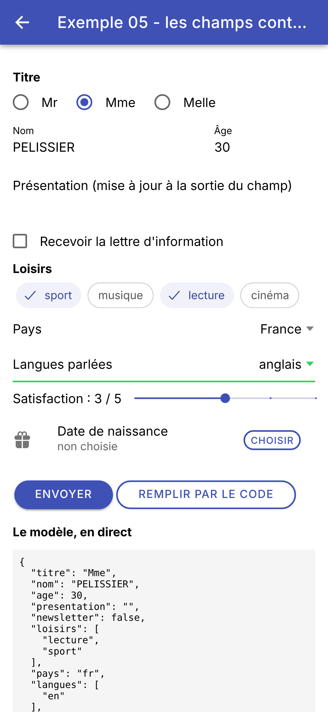 | 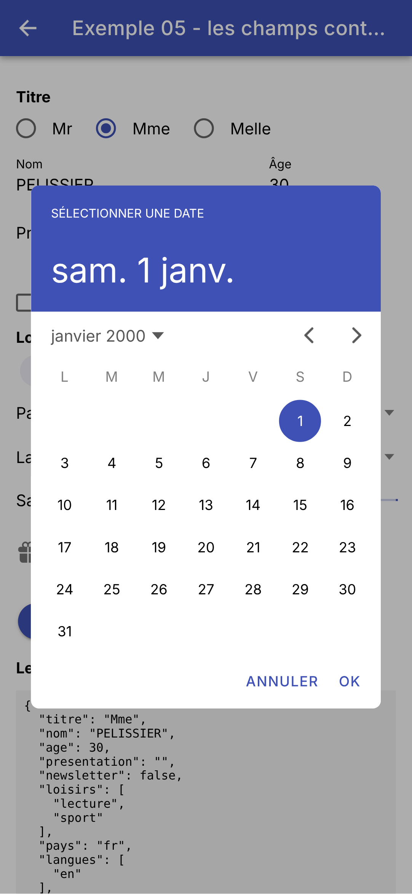 | 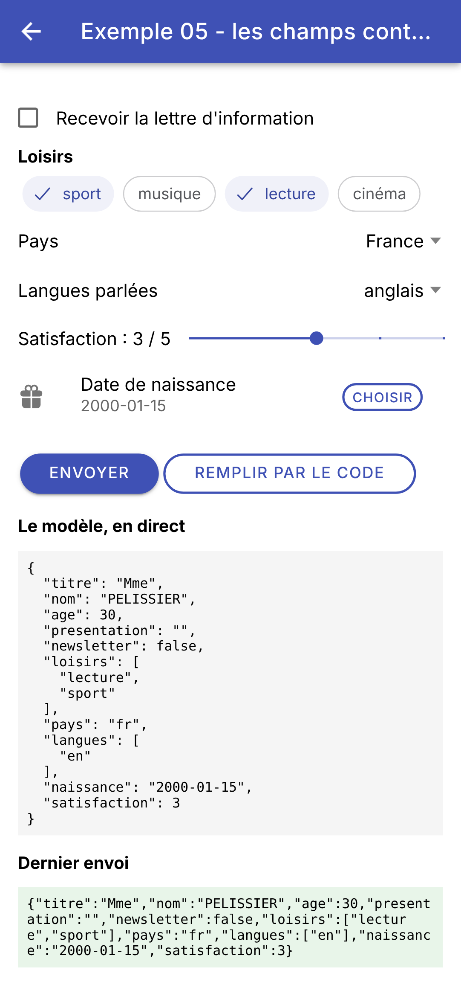 |
Le tableau suivant résume ce que chaque champ transmet dans son événement ([$event.detail]) :
Champ | Événement | Valeur transmise |
ion-input, ion-textarea, ion-searchbar | ionInput, ionChange | value : le texte (string, null ou undefined) |
ion-input type="number" (avec ngModel) | ngModelChange | un nombre, ou null si le champ est vide |
ion-checkbox, ion-toggle | ionChange | checked : true ou false |
ion-radio-group | ionChange | value : la valeur du bouton choisi |
ion-select | ionChange | value : la valeur de l'option choisie |
ion-select multiple | ionChange | value : le tableau des valeurs choisies |
ion-segment | ionChange | value : la valeur du bouton choisi (string ou number) |
ion-range | ionInput, ionChange | value : un nombre (ou { lower, upper }) |
ion-datetime | ionChange | value : la date choisie, une chaîne ISO 8601 |
Avec [[(ngModel)]], on n'a plus à connaître ces détails : chaque champ d'[Ionic] sait lire et écrire sa valeur (il est un « ControlValueAccessor », l'interface qui relie un champ aux formulaires d'[Angular]). Comparé à [Flutter], on remarquera qu'il n'y a pas de contrôleur à créer et à libérer pour les zones de texte : un champ de texte se contrôle comme les autres, par sa valeur. Et le calendrier n'est pas une fonction qui renvoie un [Future] ([showDatePicker]) : c'est un composant, placé dans le gabarit, dans une fenêtre que l'on décrit elle aussi dans le gabarit.
L'exemple 05 avait un signal par champ du formulaire. Pour un vrai formulaire, on préfère **un** objet qui contient toutes les valeurs, le **modèle**, et l'on décrit ses changements dans une seule fonction, le **réducteur** : [reduire(etatActuel, action) -> nouvelEtat]. C'est ce que fait le hook [useReducer] de [React], et ce que l'exemple 06 du cours [Flutter] écrit en [Dart] ; en [Angular], il n'y a rien à importer : [TypeScript] et un signal suffisent.
| // =========================================================================
// src/app/ex06-reducteur/ex06.page.ts - un formulaire, un objet, un réducteur
// -------------------------------------------------------------------------
// L'exemple 05 avait un signal par champ du formulaire. Pour un vrai
// formulaire, on préfère UN objet qui contient toutes les valeurs, le
// MODÈLE (ici un objet Profil, non modifiable), et l'on décrit ses
// changements dans une seule fonction, le RÉDUCTEUR :
//
// reduire(etatActuel, action) -> nouvelEtat
//
// Le composant ne modifie plus l'état : il DÉCRIT ce qui s'est passé, par
// un objet Action ({ type: 'modifier', champ: 'nom', valeur: 'Dupont' },
// { type: 'quitter', champ: 'nom' }...), et le réducteur en déduit le
// nouvel état. Toute la logique est en un endroit, dans une fonction PURE
// (même entrée, même sortie, aucun effet de bord), facile à tester.
// TypeScript s'y prête bien : un type "union discriminée" énumère toutes
// les actions possibles, et un switch sur action.type est vérifié par le
// compilateur (un cas oublié est une erreur).
//
// L'état garde aussi, pour chaque champ, s'il a été "touché" (quitté au
// moins une fois) ; on en déduit s'il est "modifié" (sa valeur diffère de
// la valeur de départ) et s'il est désactivé.
// =========================================================================
import { JsonPipe } from '@angular/common';
import { Component, computed, signal } from '@angular/core';
import {
IonBackButton, IonButton, IonButtons, IonCol, IonContent, IonGrid, IonHeader, IonInput, IonRadio, IonRadioGroup,
IonRange, IonRow, IonSelect, IonSelectOption, IonTextarea, IonTitle, IonToggle, IonToolbar,
} from '@ionic/angular';
// ---------------------------------------------------------------- le modèle
// les données du formulaire : un objet NON MODIFIABLE (Readonly : tous ses
// champs sont en lecture seule). Pour le "modifier", on en fabrique un
// nouveau : { ...ancien, nom: 'Dupont' }
type Profil = Readonly<{
titre: string;
prenom: string;
nom: string;
age: number;
newsletter: boolean;
email: string;
pays: string;
naissance: string;
presentation: string;
}>;
// le nom d'un champ du formulaire : 'titre' | 'prenom' | 'nom' | ...
type Champ = keyof Profil;
const depart: Profil = {
titre: 'Mme',
prenom: 'Marie',
nom: 'PELISSIER',
age: 30,
newsletter: false,
email: '',
pays: 'fr',
naissance: '',
presentation: '',
};
// l'état complet : les valeurs, et l'ensemble des champs déjà quittés
interface Etat {
readonly valeurs: Profil;
readonly touches: ReadonlySet<Champ>;
}
// ---------------------------------------------------------------- les actions
// une "union discriminée" : une action est l'un de ces objets, que l'on
// distingue par leur propriété commune type. Pour 'modifier', le type de la
// valeur dépend du champ : { [C in Champ]: ... }[Champ] fabrique une action
// par champ ({ champ: 'age', valeur: number } | { champ: 'nom', valeur: string } | ...)
type Action =
| { [C in Champ]: { type: 'modifier'; champ: C; valeur: Profil[C] } }[Champ]
| { type: 'quitter'; champ: Champ }
| { type: 'majuscules' }
| { type: 'reinitialiser' };
// ---------------------------------------------------------------- le réducteur
// il ne MODIFIE jamais l'état reçu, il en renvoie un nouveau
function reduire(etat: Etat, action: Action): Etat {
switch (action.type) {
case 'modifier':
// { ...objet, [clé]: valeur } : une copie de l'objet, dont UNE propriété change
return { ...etat, valeurs: { ...etat.valeurs, [action.champ]: action.valeur } };
case 'quitter':
// un nouvel ensemble : les éléments de l'ancien, plus le champ quitté
return { ...etat, touches: new Set([...etat.touches, action.champ]) };
case 'majuscules':
return {
...etat,
valeurs: { ...etat.valeurs, prenom: etat.valeurs.prenom.toUpperCase(), nom: etat.valeurs.nom.toUpperCase() },
};
case 'reinitialiser':
return { valeurs: depart, touches: new Set() };
}
}
const titres = ['Mr', 'Mme', 'Melle'];
const champsSuivis: Champ[] = ['prenom', 'nom', 'age', 'email'];
@Component({
selector: 'app-ex06',
imports: [
JsonPipe, IonHeader, IonToolbar, IonButtons, IonBackButton, IonTitle, IonContent, IonRadioGroup, IonRadio,
IonGrid, IonRow, IonCol, IonInput, IonRange, IonToggle, IonSelect, IonSelectOption, IonTextarea, IonButton,
],
templateUrl: './ex06.page.html',
styles: `
h3 { font-size: 0.95em; font-weight: bold; margin: 16px 0 4px; }
.titres { display: flex; gap: 24px; padding: 8px 0; }
pre { background: #f5f5f5; padding: 8px; font-size: 12px; }
table { width: 100%; border-collapse: collapse; font-size: 14px; }
th { text-align: left; font-weight: 500; }
th, td { padding: 6px 4px; border-bottom: 1px solid #ddd; }
`,
})
export class Ex06Page {
readonly titres = titres;
// l'état de la page : UN signal, qui contient tout l'objet Etat
readonly etat = signal<Etat>({ valeurs: depart, touches: new Set() });
// LA seule façon de changer l'état : décrire ce qui s'est passé
dispatch(action: Action): void {
this.etat.update((e) => reduire(e, action));
}
// des valeurs DÉDUITES de l'état
readonly v = computed(() => this.etat().valeurs);
modifie(c: Champ): boolean {
return this.v()[c] !== depart[c];
}
desactive(c: Champ): boolean {
return c === 'email' && !this.v().newsletter; // l'e-mail exige la lettre
}
readonly formulaireModifie = computed(() => (Object.keys(depart) as Champ[]).some((c) => this.modifie(c)));
// les lignes du tableau "l'état des champs"
readonly etatDesChamps = computed(() =>
champsSuivis.map((c) => ({
champ: c,
touche: this.etat().touches.has(c),
modifie: this.modifie(c),
desactive: this.desactive(c),
})),
);
}
|
Le modèle :
- lignes 36-46 : les données du formulaire. [type Profil = ...] donne un nom à un type ; [Readonly<...>] rend tous ses champs non modifiables : [profil.nom = 'Dupont'] est une erreur de compilation. Pour « modifier » un profil, on en fabrique une copie dont un champ change : [{ ...profil, nom: 'Dupont' }]. C'est le [copyWith] de [Dart], sans rien à écrire : l'opérateur [...] « étale » les propriétés d'un objet dans un nouvel objet, et les propriétés écrites ensuite remplacent les anciennes ;
- ligne 49 : [keyof Profil] est le type des noms des champs du profil : ['titre' | 'prenom' | 'nom' | ...]. Pas besoin d'énumération : le type des noms de champs est déduit du modèle lui-même ;
- lignes 51-61 : les valeurs de départ ;
- lignes 64-67 : l'état complet : les valeurs, et l'ensemble des champs déjà quittés (« touchés »).
Les actions et le réducteur :
- lignes 74-78 : les actions possibles, une « union discriminée » : une action est l'un de ces quatre types d'objets, que l'on distingue par leur propriété commune [type] (le « discriminant »). Une action décrit ce qui s'est passé : [{ type: 'modifier', champ: 'nom', valeur: 'Dupont' }], [{ type: 'quitter', champ: 'nom' }]... C'est le pendant de la classe scellée ([sealed]) de [Dart] et de ses sous-classes ;
- ligne 75 : l'action [modifier] est elle-même une union, d'une action par champ : [{ [C in Champ]: ... }] fabrique un objet qui a une propriété par champ [C], dont la valeur est le type de l'action pour ce champ (la valeur a le type du champ : [Profil[C]]) ; [[Champ]] en extrait l'union de ces types. Résultat : [{ type: 'modifier', champ: 'age', valeur: 30 }] est accepté, [{ type: 'modifier', champ: 'age', valeur: 'trente' }] est refusé par le compilateur. [Dart] vérifiait ce type à l'exécution ([v as int]) ; [TypeScript] le vérifie à la compilation ;
- lignes 82-98 : le réducteur. C'est une fonction pure : même entrée, même sortie, aucun effet de bord ; il ne modifie jamais l'état reçu, il en renvoie un nouveau. Le [switch] porte sur le discriminant : dans chaque [case], [TypeScript] sait quel est le type de l'action (dans [case 'quitter'], [action] a un champ [champ] ; dans [case 'majuscules'], il n'en a pas). Le compilateur vérifie aussi que tous les cas sont traités : la fonction doit renvoyer un [Etat] (ligne 82), et un cas oublié la ferait se terminer sans rien renvoyer, ce qui serait une erreur de compilation ;
- ligne 86 : [[action.champ]: action.valeur] : une propriété dont le NOM est calculé (entre crochets) ;
- ligne 89 : un nouvel ensemble, fait des éléments de l'ancien ([...etat.touches]) et du champ quitté.
Le composant :
- ligne 123 : l'état de l'écran : UN signal, qui contient l'objet [Etat] ;
- lignes 126-128 : la SEULE façon de changer l'état : décrire ce qui s'est passé. [dispatch] (« expédier », le nom que lui donne [React]) calcule le nouvel état avec le réducteur. Contrairement à l'exemple [Flutter], il n'y a pas de contrôleurs de champs à resynchroniser après coup (boutons « Nom en majuscules » et « Réinitialiser ») : chaque champ affiche sa valeur par une liaison [[value]], qui suit l'état toute seule ;
- lignes 131-147 : des valeurs déduites de l'état : les valeurs du formulaire ([v], pour abréger le gabarit) ; un champ est modifié si sa valeur diffère de la valeur de départ ; l'e-mail est désactivé sans la lettre d'information ; le formulaire est modifié si l'un de ses champs l'est ([some]) ; les lignes du tableau de l'état des champs.
Le gabarit :
| <!-- ======================================================================
ex06.page.html - chaque champ DÉCRIT ses changements par une action
====================================================================== -->
<ion-header>
<ion-toolbar color="primary">
<ion-buttons slot="start">
<ion-back-button defaultHref="/" />
</ion-buttons>
<ion-title>Exemple 06 - un réducteur</ion-title>
</ion-toolbar>
</ion-header>
<ion-content class="ion-padding">
<ion-radio-group [value]="v().titre"
(ionChange)="dispatch({ type: 'modifier', champ: 'titre', valeur: $event.detail.value })">
<div class="titres">
@for (t of titres; track t) {
<ion-radio [value]="t" labelPlacement="end">{{ t }}</ion-radio>
}
</div>
</ion-radio-group>
<ion-grid class="ion-no-padding">
<ion-row>
<ion-col>
<!-- (ionInput) : une action 'modifier' à chaque frappe ;
(ionBlur) : une action 'quitter' quand le champ perd le focus -->
<ion-input label="Prénom" labelPlacement="floating" [value]="v().prenom"
(ionInput)="dispatch({ type: 'modifier', champ: 'prenom', valeur: $event.detail.value ?? '' })"
(ionBlur)="dispatch({ type: 'quitter', champ: 'prenom' })" />
</ion-col>
<ion-col>
<ion-input label="Nom" labelPlacement="floating" [value]="v().nom"
(ionInput)="dispatch({ type: 'modifier', champ: 'nom', valeur: $event.detail.value ?? '' })"
(ionBlur)="dispatch({ type: 'quitter', champ: 'nom' })" />
</ion-col>
</ion-row>
</ion-grid>
<!-- (ionKnobMoveEnd) : le curseur est relâché, le champ a été "quitté" -->
<ion-range [label]="'Âge : ' + v().age" [min]="0" [max]="120" [value]="v().age"
(ionInput)="dispatch({ type: 'modifier', champ: 'age', valeur: +$event.detail.value })"
(ionKnobMoveEnd)="dispatch({ type: 'quitter', champ: 'age' })" />
<ion-toggle [checked]="v().newsletter"
(ionChange)="dispatch({ type: 'modifier', champ: 'newsletter', valeur: $event.detail.checked })">
Recevoir la lettre d'information
</ion-toggle>
<!-- [disabled] : une valeur déduite de l'état -->
<ion-input label="E-mail (si lettre d'information)" labelPlacement="floating" type="email"
[value]="v().email" [disabled]="desactive('email')"
(ionInput)="dispatch({ type: 'modifier', champ: 'email', valeur: $event.detail.value ?? '' })"
(ionBlur)="dispatch({ type: 'quitter', champ: 'email' })" />
<ion-select label="Pays" interface="popover" [value]="v().pays"
(ionChange)="dispatch({ type: 'modifier', champ: 'pays', valeur: $event.detail.value })">
<ion-select-option value="fr">France</ion-select-option>
<ion-select-option value="be">Belgique</ion-select-option>
<ion-select-option value="ch">Suisse</ion-select-option>
</ion-select>
<ion-textarea label="Présentation" labelPlacement="floating" [rows]="2" [value]="v().presentation"
(ionInput)="dispatch({ type: 'modifier', champ: 'presentation', valeur: $event.detail.value ?? '' })"
(ionBlur)="dispatch({ type: 'quitter', champ: 'presentation' })" />
<div class="ion-margin-vertical">
<ion-button fill="outline" shape="round" (click)="dispatch({ type: 'majuscules' })">Nom en majuscules</ion-button>
<ion-button fill="outline" shape="round" (click)="dispatch({ type: 'reinitialiser' })">Réinitialiser</ion-button>
</div>
<h3>Le modèle, en direct</h3>
<pre>{{ v() | json }}</pre>
<h3>L'état des champs</h3>
<!-- un tableau HTML ordinaire, une ligne par champ suivi -->
<table>
<tr><th>champ</th><th>touché</th><th>modifié</th><th>désactivé</th></tr>
@for (ligne of etatDesChamps(); track ligne.champ) {
<tr>
<td>{{ ligne.champ }}</td>
<td>{{ ligne.touche }}</td>
<td>{{ ligne.modifie }}</td>
<td>{{ ligne.desactive }}</td>
</tr>
}
</table>
<p>formulaire modifié : <strong>{{ formulaireModifie() }}</strong></p>
</ion-content>
|
- chaque champ affiche une valeur du modèle ([[value]="v().prenom"]...) et décrit ses changements par une action : [dispatch({ type: 'modifier', champ: 'prenom', valeur: ... })] à chaque frappe ([(ionInput)]), [dispatch({ type: 'quitter', champ: 'prenom' })] quand il perd le focus ([(ionBlur)]). Un objet peut s'écrire directement dans une instruction du gabarit, et il est vérifié par le compilateur comme dans le code [TypeScript] : grâce à [strictTemplates], une valeur du mauvais type pour un champ ([valeur: 'trente'] pour l'âge) est une erreur de compilation, signalée dans le fichier [HTML] ;
- lignes 42-44 : l'âge, un curseur de 0 à 120. [+$event.detail.value] : l'opérateur [+] convertit la valeur en nombre. [(ionKnobMoveEnd)] est émis quand on lâche le curseur : le champ a été « quitté » ;
- lignes 46-49 : la lettre d'information, un interrupteur ;
- ligne 53 : [[disabled]] : le champ e-mail est désactivé tant que la lettre d'information n'est pas demandée, une valeur déduite de l'état ;
- lignes 69-70 : les boutons décrivent leur action, sans champ ni valeur ;
- ligne 74 : le modèle, en direct ;
- lignes 78-88 : un tableau HTML ordinaire, [<table>], avec ses lignes ([<tr>]), ses cellules d'en-tête ([<th>]) et ses cellules ([<td>]) : l'état de chaque champ suivi ;
- ligne 89 : un texte fait de plusieurs morceaux de styles différents : en HTML, il suffit d'une balise [<strong>] (le [Text.rich] de [Flutter]).
On modifie le nom, on quitte le champ, on s'abonne à la lettre ; puis on met le nom en majuscules :
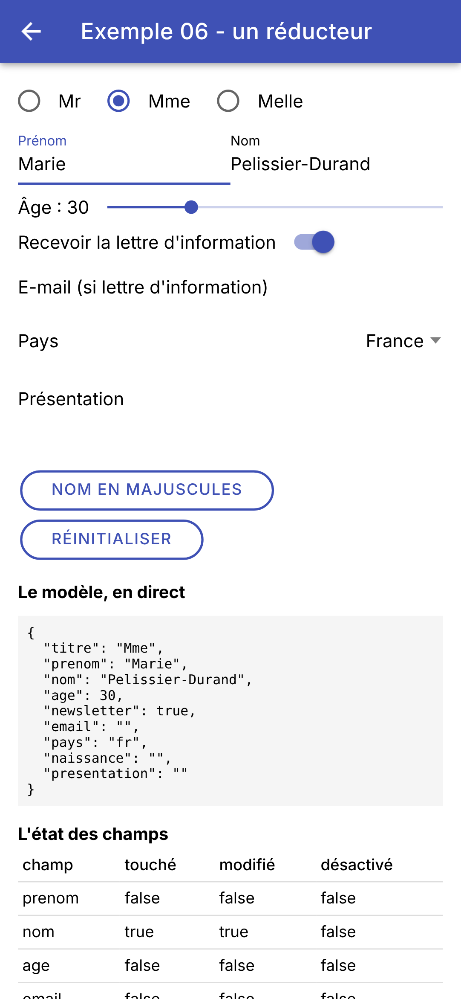 | 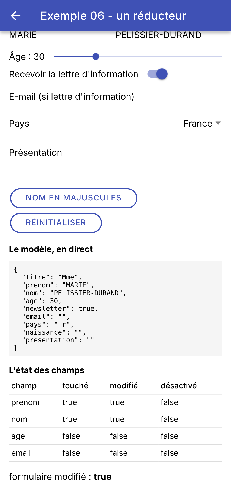 |
À droite, le prénom est lui aussi « touché » : on l'avait sélectionné avant d'appuyer sur le bouton, et l'appui lui a fait perdre le focus. Toute la logique du formulaire est dans le réducteur, une fonction de quelques lignes, sans composant, qu'on peut tester seule. Le composant ne fait plus qu'afficher l'état et décrire ce qui arrive.
3.7. Exemple 07 : valider un formulaire, à la main
Une fonction **pure**, [valider(compte)], renvoie les erreurs des champs ; un signal calculé l'appelle chaque fois que le compte change, les erreurs sont donc toujours à jour. On ne les montre pas d'emblée (un formulaire vide couvert de rouge est désagréable), seulement pour un champ déjà quitté. L'envoi fait apparaître toutes les erreurs.
| // =========================================================================
// src/app/ex07-validation/ex07.page.ts - valider un formulaire, à la main
// -------------------------------------------------------------------------
// Une fonction PURE, valider(compte), renvoie les erreurs des champs ; un
// signal calculé (computed) l'appelle chaque fois que le compte change :
// les erreurs sont donc toujours à jour.
// On ne les montre pas d'emblée (un formulaire vide couvert de rouge est
// désagréable) : seulement pour un champ déjà quitté ("touché"). L'envoi
// marque tous les champs comme touchés, puis n'agit que si le formulaire
// est valide. Le message d'erreur est affiché par le gabarit, sous le
// champ (la propriété errorText d'ion-input, elle, sert avec les
// formulaires d'Angular : cf. exemple 08).
//
// Mêmes règles que le serveur RdvMedecins (formulaire "Créer un compte").
// ATTENTION : cette validation n'est qu'un CONFORT pour l'utilisateur (une
// réponse immédiate, sans aller-retour avec le serveur). Elle ne protège
// rien : n'importe qui peut envoyer au serveur une requête fabriquée à la
// main (curl...). Le serveur revalide donc TOUJOURS tout (cf. exemple 25).
// =========================================================================
import { Component, computed, input, signal } from '@angular/core';
import {
IonBackButton, IonButton, IonButtons, IonContent, IonHeader, IonIcon, IonInput, IonSelect, IonSelectOption,
IonText, IonTitle, IonToolbar,
} from '@ionic/angular';
import { addIcons } from 'ionicons';
import { checkmarkCircle } from 'ionicons/icons';
// le compte saisi
interface Compte {
titre: string;
prenom: string;
nom: string;
login: string;
password: string;
confirmation: string;
}
type Champ = keyof Compte;
// pour chaque champ en erreur, son message : un objet dont toutes les clés
// sont facultatives (Partial)
type Erreurs = Partial<Record<Champ, string>>;
const titres = ['Mr', 'Mme', 'Melle'];
const formatLogin = /^[a-z0-9._-]{1,30}$/;
const motDePasseMin = 6;
// les règles : une fonction pure, qui ne dépend que de son argument
function valider(c: Compte): Erreurs {
const erreurs: Erreurs = {};
if (!titres.includes(c.titre)) erreurs.titre = 'Choisissez un titre dans la liste.';
if (!c.prenom.trim()) {
erreurs.prenom = 'Le prénom est obligatoire.';
} else if (c.prenom.length > 20) {
erreurs.prenom = 'Le prénom ne doit pas dépasser 20 caractères.';
}
if (!c.nom.trim()) {
erreurs.nom = 'Le nom est obligatoire.';
} else if (c.nom.length > 20) {
erreurs.nom = 'Le nom ne doit pas dépasser 20 caractères.';
}
if (!c.login) {
erreurs.login = 'Le login est obligatoire.';
} else if (!formatLogin.test(c.login)) {
erreurs.login = 'Lettres minuscules non accentuées, chiffres, point, tiret, souligné.';
}
if (!c.password) {
erreurs.password = 'Le mot de passe est obligatoire.';
} else if (c.password.length < motDePasseMin) {
erreurs.password = `Au moins ${motDePasseMin} caractères.`;
}
// une règle qui compare DEUX champs
if (c.confirmation !== c.password) {
erreurs.confirmation = 'La confirmation ne correspond pas au mot de passe.';
}
return erreurs;
}
// un petit composant : un message sur fond coloré. Il reçoit son texte et
// sa couleur par des ENTRÉES, input() (cf. exemple 10)
@Component({
selector: 'app-message',
template: `<div class="message" [style.background]="couleur()">{{ texte() }}</div>`,
styles: `.message { padding: 12px; border-radius: 8px; margin-top: 12px; }`,
})
export class Message {
readonly texte = input.required<string>();
readonly couleur = input.required<string>();
}
@Component({
selector: 'app-ex07',
imports: [
Message, IonHeader, IonToolbar, IonButtons, IonBackButton, IonTitle, IonContent, IonSelect, IonSelectOption,
IonInput, IonIcon, IonText, IonButton,
],
templateUrl: './ex07.page.html',
styles: `
/* le libellé d'un champ en erreur, en rouge */
.faux { color: var(--ion-color-danger); }
.erreur { font-size: 12px; padding: 4px 0; }
`,
})
export class Ex07Page {
readonly titres = titres;
// les champs de texte, décrits par des données : le gabarit en fait une boucle
readonly champsTexte: { champ: Champ; libelle: string; secret: boolean }[] = [
{ champ: 'prenom', libelle: 'Prénom', secret: false },
{ champ: 'nom', libelle: 'Nom', secret: false },
{ champ: 'login', libelle: 'Login', secret: false },
{ champ: 'password', libelle: 'Mot de passe', secret: true },
{ champ: 'confirmation', libelle: 'Confirmation', secret: true },
];
// l'état : le compte saisi, les champs déjà quittés, le résultat de l'envoi
readonly compte = signal<Compte>({ titre: 'Mr', prenom: '', nom: '', login: '', password: '', confirmation: '' });
readonly touches = signal<ReadonlySet<Champ>>(new Set());
readonly envoiTente = signal(false);
readonly succes = signal(false);
// les erreurs : CALCULÉES à partir du compte, jamais rangées dans l'état
readonly erreurs = computed(() => valider(this.compte()));
readonly nombreErreurs = computed(() => Object.keys(this.erreurs()).length);
constructor() {
addIcons({ checkmarkCircle });
}
modifier(champ: Champ, valeur: string | null | undefined): void {
this.compte.update((c) => ({ ...c, [champ]: valeur ?? '' }));
this.succes.set(false);
}
quitter(champ: Champ): void {
this.touches.update((t) => new Set([...t, champ]));
}
// l'erreur à AFFICHER pour un champ : seulement s'il a été touché
erreur(champ: Champ): string | undefined {
return this.touches().has(champ) ? this.erreurs()[champ] : undefined;
}
// un champ touché et sans erreur : il aura sa coche verte
valide(champ: Champ): boolean {
return this.touches().has(champ) && !this.erreurs()[champ];
}
envoyer(): void {
this.envoiTente.set(true);
// tous les champs sont touchés : toutes les erreurs apparaissent
this.touches.set(new Set(Object.keys(this.compte()) as Champ[]));
// ici, on enverrait le compte au serveur (cf. exemple 25)
this.succes.set(this.nombreErreurs() === 0);
}
}
|
- lignes 30-38 : le compte saisi, et le nom de ses champs ;
- ligne 41 : les erreurs : un objet dont les clés sont des noms de champs et les valeurs des messages. [Record<Champ, string>] aurait une propriété pour CHAQUE champ ; [Partial<...>] les rend toutes facultatives : seuls les champs en erreur y figurent ;
- lignes 44-45 : une expression régulière (le format d'un login) et une constante : les mêmes règles que le serveur [RdvMedecins] ;
- lignes 48-76 : les règles : une fonction pure, qui ne dépend que de son argument, et renvoie les erreurs. La dernière règle compare DEUX champs : la confirmation et le mot de passe ;
- lignes 80-88 : un petit composant, pour ne pas répéter deux fois la même boîte colorée : un message sur fond coloré. Il reçoit son texte et sa couleur de son parent, par deux **entrées** : [input.required<string>()] crée une entrée obligatoire, qui se lit comme un signal ([texte()]). L'exemple 10 présentera les entrées en détail. Le composant est déclaré dans le même fichier que la page qui l'utilise ; il est exporté ([export]) pour pouvoir être réutilisé ailleurs ; ce n'est pas obligatoire pour l'utiliser dans ce fichier ;
- lignes 106-112 : les champs de texte, décrits par des données : le gabarit en fera une boucle ;
- lignes 115-118 : l'état : le compte, les champs déjà quittés, et le résultat de l'envoi ;
- lignes 121-122 : les erreurs, CALCULÉES à partir du compte, jamais rangées dans l'état ; et leur nombre ([Object.keys] donne le tableau des clés d'un objet) ;
- lignes 128-131 : une frappe dans un champ change le compte (une copie, dont un champ change) ;
- lignes 138-140 : l'erreur à afficher pour un champ : seulement s'il a été touché ;
- lignes 143-145 : un champ touché et sans erreur aura sa coche verte ;
- lignes 147-153 : l'envoi marque tous les champs comme touchés (les erreurs apparaissent), puis n'agit que si le formulaire est valide.
| <!-- ======================================================================
ex07.page.html - les champs et leurs erreurs
====================================================================== -->
<ion-header>
<ion-toolbar color="primary">
<ion-buttons slot="start">
<ion-back-button defaultHref="/" />
</ion-buttons>
<ion-title>Exemple 07 - la validation</ion-title>
</ion-toolbar>
</ion-header>
<ion-content class="ion-padding">
<ion-select label="Titre" interface="popover" [value]="compte().titre"
(ionChange)="modifier('titre', $event.detail.value)">
@for (t of titres; track t) {
<ion-select-option [value]="t">{{ t }}</ion-select-option>
}
</ion-select>
<!-- un champ par élément de champsTexte : le gabarit n'est écrit qu'une fois -->
@for (f of champsTexte; track f.champ) {
<ion-input labelPlacement="floating" [type]="f.secret ? 'password' : 'text'" [value]="compte()[f.champ]"
(ionInput)="modifier(f.champ, $event.detail.value)" (ionBlur)="quitter(f.champ)">
<!-- slot="label" : un libellé écrit par nous, au lieu de la propriété label ;
[class.faux] : la classe CSS qui le colore en rouge si le champ est en erreur -->
<div slot="label" [class.faux]="!!erreur(f.champ)">{{ f.libelle }}</div>
<!-- slot="end" : une icône à droite du champ, une coche verte s'il est touché et valide -->
@if (valide(f.champ)) {
<ion-icon slot="end" name="checkmark-circle" color="success" />
}
</ion-input>
<!-- le message d'erreur, sous le champ ; "as message" nomme la valeur de la condition -->
@if (erreur(f.champ); as message) {
<ion-text color="danger"><div class="erreur">{{ message }}</div></ion-text>
}
}
<ion-button expand="block" shape="round" class="ion-margin-top" (click)="envoyer()">Créer le compte</ion-button>
<!-- les messages de fin de formulaire : le composant <app-message> et ses entrées -->
@if (envoiTente() && nombreErreurs() > 0) {
<app-message [texte]="'Le formulaire contient ' + nombreErreurs() + ' erreur(s).'" couleur="#ffebee" />
}
@if (succes()) {
<app-message texte="Formulaire valide : il pourrait être envoyé au serveur." couleur="#e8f5e9" />
}
</ion-content>
|
- lignes 15-20 : une liste déroulante pour le titre ;
- lignes 23-38 : un champ par élément de [champsTexte] : le gabarit d'un champ n'est écrit qu'une fois. Son type dépend du champ : [password] masque les caractères d'un mot de passe ;
- ligne 28 : le libellé du champ. Au lieu de la propriété [label], on le donne par l'emplacement [slot="label"] : c'est alors un élément de notre gabarit, que l'on peut styler. [[class.faux]] le colore en rouge quand le champ est en erreur ;
- lignes 30-32 : [slot="end"] : une icône à droite du champ, une coche verte ([color="success"]) s'il est touché et valide ;
- lignes 35-37 : le message d'erreur, en rouge, sous le champ. [@if (erreur(f.champ); as message)] : le bloc n'existe que s'il y a une erreur à afficher, et [message] est son texte ;
- lignes 43-48 : les messages de fin de formulaire : le composant [<app-message>], et ses deux entrées. [[texte]="..."] lui donne la valeur d'une expression ; [texte="..."], sans crochets, une chaîne fixe.
On remplit quelques champs, puis on envoie ; puis on corrige tout, et on renvoie :
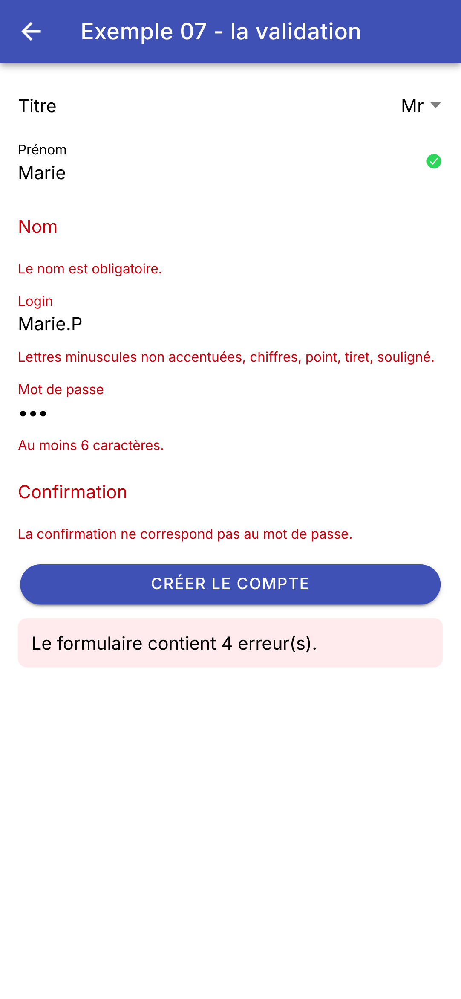 | 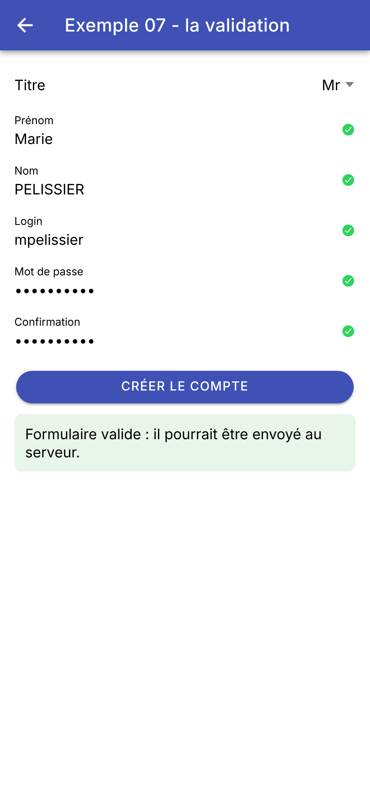 |
Pourquoi ne pas avoir utilisé la propriété [errorText] d'[<ion-input>], qui sait afficher une erreur sous le champ ? Parce qu'[Ionic] ne l'affiche que si le champ porte les classes CSS [ion-invalid] (il est faux) et [ion-touched] (il a été quitté), et qu'il gère lui-même ces deux classes, en les recopiant de celles que posent les formulaires d'[Angular] ([ng-invalid], [ng-touched]) : posées à la main, elles sont effacées par [Ionic] à la frappe suivante. [errorText] va donc avec les formulaires d'[Angular], qu'utilise l'exemple suivant. Ici, sans formulaire d'[Angular], on affiche le message nous-mêmes : trois lignes de gabarit.
ATTENTION : cette validation n'est qu'un **confort** pour l'utilisateur, une réponse immédiate, sans aller-retour avec le serveur. Elle ne protège rien : n'importe qui peut envoyer au serveur une requête fabriquée à la main ([curl]...), et le code d'une application mobile peut être modifié. Le serveur revalide donc toujours tout (cf. exemple 25).
Le formulaire de l'exemple 07, écrit avec les outils qu'[Angular] fournit lui-même. Là où [Flutter] a ses widgets de formulaire ([Form], [TextFormField]), [Angular] a ses « formulaires réactifs » ([ReactiveFormsModule]) : le formulaire est décrit dans la classe, par des objets, et le gabarit y relie ses champs.
| // =========================================================================
// src/app/ex08-formulaires-reactifs/ex08.page.ts - les formulaires réactifs
// -------------------------------------------------------------------------
// Le formulaire de l'exemple 07, écrit avec les outils de formulaire
// qu'Angular fournit lui-même (ReactiveFormsModule) :
// - FormGroup : un groupe de champs (FormControl), décrit dans la classe,
// relié au gabarit par [formGroup] et formControlName ;
// - Validators : des règles toutes faites (required, maxLength, pattern,
// minLength...). Une règle (ValidatorFn) est une fonction :
// (contrôle) -> null si la valeur est bonne, sinon un objet d'erreurs
// ({ obligatoire: true }, { maxlength: {...} }...) ;
// - un validateur de GROUPE reçoit tout le groupe : il compare deux champs ;
// - formulaire.valid, formulaire.markAllAsTouched(), getRawValue()... :
// l'état du formulaire, lu et modifié par le code.
// Les champs d'Ionic s'y branchent tout seuls : ion-input reçoit les classes
// ion-invalid et ion-touched quand son contrôle est faux et a été quitté,
// et affiche alors son errorText.
// =========================================================================
import { Component, inject, signal } from '@angular/core';
import {
AbstractControl, NonNullableFormBuilder, ReactiveFormsModule, ValidationErrors, ValidatorFn, Validators,
} from '@angular/forms';
import {
IonBackButton, IonButton, IonButtons, IonContent, IonHeader, IonInput, IonSelect, IonSelectOption, IonText,
IonTitle, IonToolbar,
} from '@ionic/angular';
const titres = ['Mr', 'Mme', 'Melle'];
// les champs de texte qui ont des règles, et leur message "obligatoire"
type ChampTexte = 'prenom' | 'nom' | 'login' | 'password';
const obligatoires: Record<ChampTexte, string> = {
prenom: 'Le prénom est obligatoire.',
nom: 'Le nom est obligatoire.',
login: 'Le login est obligatoire.',
password: 'Le mot de passe est obligatoire.',
};
// un validateur PERSONNALISÉ : la valeur ne doit pas être vide ou faite
// d'espaces (Validators.required accepte " ")
const obligatoire: ValidatorFn = (controle: AbstractControl): ValidationErrors | null =>
String(controle.value ?? '').trim() ? null : { obligatoire: true };
// un validateur de GROUPE : il reçoit le FormGroup, et compare deux de ses champs
const confirmationIdentique: ValidatorFn = (groupe: AbstractControl): ValidationErrors | null =>
groupe.get('confirmation')?.value === groupe.get('password')?.value ? null : { confirmation: true };
@Component({
selector: 'app-ex08',
imports: [
ReactiveFormsModule, IonHeader, IonToolbar, IonButtons, IonBackButton, IonTitle, IonContent, IonSelect,
IonSelectOption, IonInput, IonText, IonButton,
],
templateUrl: './ex08.page.html',
styles: `
.erreur { font-size: 12px; }
.resultat { padding: 12px; border-radius: 8px; margin-top: 12px; word-break: break-all; }
`,
})
export class Ex08Page {
readonly titres = titres;
// le FormBuilder fabrique les contrôles ; "NonNullable" : un champ remis à
// zéro (reset) reprend sa valeur de départ, et non null
private readonly fb = inject(NonNullableFormBuilder);
// le formulaire : pour chaque champ, [valeur de départ, règles]
readonly formulaire = this.fb.group(
{
titre: ['Mr'],
prenom: ['', [obligatoire, Validators.maxLength(20)]],
nom: ['', [obligatoire, Validators.maxLength(20)]],
login: ['', [Validators.required, Validators.pattern(/^[a-z0-9._-]{1,30}$/)]],
password: ['', [Validators.required, Validators.minLength(6)]],
confirmation: [''],
},
// les règles du groupe lui-même
{ validators: confirmationIdentique },
);
// null : pas encore d'envoi ; '' : envoi refusé ; sinon, le JSON envoyé
readonly envoi = signal<string | null>(null);
// le message d'erreur d'un champ, d'après les erreurs de son contrôle
// (errors : null, ou un objet dont chaque clé est le nom d'une règle violée)
erreur(champ: ChampTexte): string {
const erreurs = this.formulaire.controls[champ].errors;
if (erreurs?.['obligatoire'] || erreurs?.['required']) {
return obligatoires[champ];
}
if (erreurs?.['maxlength']) {
return `${erreurs['maxlength'].requiredLength} caractères au plus.`;
}
if (erreurs?.['pattern']) {
return 'Lettres minuscules non accentuées, chiffres, point, tiret, souligné.';
}
if (erreurs?.['minlength']) {
return `Au moins ${erreurs['minlength'].requiredLength} caractères.`;
}
return '';
}
// l'erreur du GROUPE, affichée sous la confirmation dès qu'on y a touché
erreurConfirmation(): boolean {
const confirmation = this.formulaire.controls.confirmation;
return this.formulaire.hasError('confirmation') && (confirmation.dirty || confirmation.touched);
}
creer(): void {
if (this.formulaire.invalid) {
// toutes les erreurs apparaissent
this.formulaire.markAllAsTouched();
this.envoi.set('');
return;
}
// getRawValue() : les valeurs de tous les champs ; on ne garde pas la confirmation
const { confirmation, ...compte } = this.formulaire.getRawValue();
this.envoi.set(JSON.stringify(compte));
}
}
|
- lignes 21-23 : les outils des formulaires réactifs, dans le paquet [@angular/forms] ;
- lignes 32-38 : les champs de texte qui ont des règles, et leur message « obligatoire » ;
- lignes 42-43 : un validateur personnalisé. Un validateur ([ValidatorFn]) est une fonction qui reçoit le contrôle d'un champ ([controle.value] est sa valeur) et renvoie [null] si la valeur est bonne, sinon un objet qui décrit l'erreur : ici, [{ obligatoire: true }]. [Angular] a le sien, [Validators.required], mais il accepte une valeur faite d'espaces ;
- lignes 46-47 : un validateur de GROUPE : il reçoit le formulaire entier ([groupe.get('password')] est le contrôle du mot de passe), et compare deux de ses champs. [Angular] le relance à chaque changement de l'un des champs du groupe : quand le mot de passe change, la confirmation est revérifiée, sans rien à écrire (l'exemple [Flutter] devait revalider la confirmation lui-même, par la clé de son champ) ;
- ligne 52 : le module des formulaires réactifs, importé par le composant ;
- ligne 66 : le [FormBuilder], obtenu par injection de dépendances. Il fabrique les contrôles en abrégé. [NonNullable] : un champ remis à zéro ([reset()]) reprend sa valeur de départ, et non [null] : les valeurs sont alors des [string], et non des [string | null] ;
- lignes 69-80 : le formulaire, un [FormGroup] : pour chaque champ, sa valeur de départ et ses règles. [Validators.maxLength(20)], [Validators.pattern(...)], [Validators.minLength(6)] sont des fabriques de validateurs : elles reçoivent un paramètre et renvoient la règle. Le second argument de [group] donne les règles du groupe lui-même ;
- lignes 87-102 : le message d'erreur d'un champ. [this.formulaire.controls[champ].errors] est [null] si le champ est bon, sinon un objet dont chaque clé est le nom d'une règle violée : [{ obligatoire: true }], [{ maxlength: { requiredLength: 20, actualLength: 23 } }], [{ pattern: ... }]... On choisit le message selon la règle ;
- lignes 105-108 : l'erreur du groupe, à afficher sous la confirmation dès qu'on y a touché. Un contrôle est [dirty] (« sale ») dès que l'utilisateur a modifié sa valeur, [touched] dès qu'il l'a quitté ;
- lignes 110-120 : l'envoi. [formulaire.invalid] est vrai si l'une des règles (des champs ou du groupe) n'est pas respectée ; on marque alors tous les champs comme touchés ([markAllAsTouched()]), et leurs erreurs apparaissent. Sinon, [getRawValue()] donne les valeurs de tous les champs, un objet typé ([TypeScript] connaît ses propriétés, déduites du [group]), dont on retire la confirmation par « déstructuration » : [confirmation] reçoit la propriété du même nom, [compte] tout le reste.
| <!-- ======================================================================
ex08.page.html - un formulaire réactif
====================================================================== -->
<ion-header>
<ion-toolbar color="primary">
<ion-buttons slot="start">
<ion-back-button defaultHref="/" />
</ion-buttons>
<ion-title>Exemple 08 - FormGroup</ion-title>
</ion-toolbar>
</ion-header>
<ion-content class="ion-padding">
<!-- [formGroup] : le formulaire de la classe ; (ngSubmit) : la méthode appelée à l'envoi -->
<form [formGroup]="formulaire" (ngSubmit)="creer()">
<!-- formControlName : le contrôle du groupe auquel ce champ est relié -->
<ion-select label="Titre" labelPlacement="floating" interface="popover" formControlName="titre">
@for (t of titres; track t) {
<ion-select-option [value]="t">{{ t }}</ion-select-option>
}
</ion-select>
<!-- errorText : le message affiché, en rouge, quand le contrôle est faux ET a été quitté -->
<ion-input label="Prénom" labelPlacement="floating" formControlName="prenom" [errorText]="erreur('prenom')" />
<ion-input label="Nom" labelPlacement="floating" formControlName="nom" [errorText]="erreur('nom')" />
<ion-input label="Login" labelPlacement="floating" formControlName="login" [errorText]="erreur('login')" />
<ion-input label="Mot de passe" labelPlacement="floating" type="password" formControlName="password"
[errorText]="erreur('password')" />
<ion-input label="Confirmation" labelPlacement="floating" type="password" formControlName="confirmation" />
<!-- l'erreur du GROUPE n'appartient à aucun champ : on l'affiche nous-mêmes -->
@if (erreurConfirmation()) {
<ion-text color="danger">
<div class="erreur">La confirmation ne correspond pas au mot de passe.</div>
</ion-text>
}
<!-- type="submit" : le bouton envoie le formulaire (ngSubmit) -->
<ion-button type="submit" expand="block" shape="round" class="ion-margin-top">Créer le compte</ion-button>
</form>
@if (envoi() !== null) {
<div class="resultat" [style.background]="envoi() ? '#e8f5e9' : '#ffebee'">
{{ envoi() ? 'Formulaire valide : ' + envoi() : 'Formulaire invalide.' }}
</div>
}
</ion-content>
|
- ligne 16 : [[formGroup]] relie la balise [<form>] au formulaire de la classe ; [(ngSubmit)] est émis quand on l'envoie ;
- ligne 18 : [formControlName="titre"] relie la liste déroulante au contrôle [titre] du groupe : elle affiche sa valeur et le met à jour ;
- lignes 25-30 : les champs de texte, reliés de la même façon. [[errorText]] : le message d'erreur du champ. [Ionic] l'affiche, en rouge, et colore le champ, quand le contrôle est faux et a été quitté : les classes [ng-invalid] et [ng-touched] que pose [Angular] sur le champ sont recopiées par [Ionic] en [ion-invalid] et [ion-touched]. Il n'y a rien d'autre à écrire ;
- lignes 32-36 : l'erreur du groupe n'appartient à aucun champ : on l'affiche nous-mêmes, sous la confirmation ;
- ligne 39 : [type="submit"] : le bouton envoie le formulaire ;
- lignes 42-46 : le résultat de l'envoi, sur fond rouge ou vert.
On saisit des valeurs fausses et on envoie ; puis on corrige :
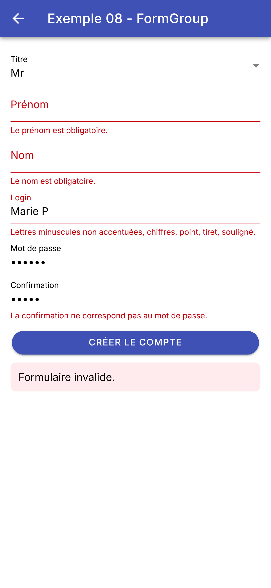 | 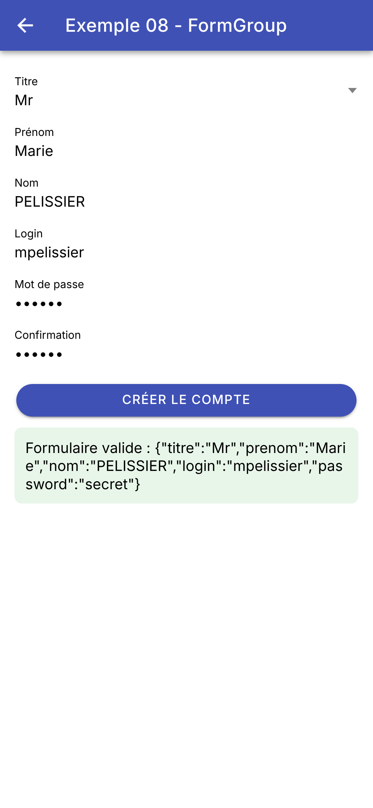 |
Une différence de comportement avec l'exemple [Flutter] : [AutovalidateMode.onUserInteraction] y affichait l'erreur d'un champ dès la première frappe ; [Ionic] attend qu'on ait quitté le champ ([ion-touched]), ce qui évite de crier à l'erreur pendant qu'on tape encore. Le pendant de [formulaire.validate()] et [formulaire.save()] est ici [formulaire.invalid] et [formulaire.getRawValue()].
Laquelle des deux méthodes choisir ? Les formulaires réactifs suffisent pour un formulaire dont les règles sont écrites dans l'application ([Angular] 22 propose aussi, dans [@angular/forms/signals], des formulaires bâtis sur les signaux, qui suivent le même principe). Mais dans ce cours, ce sont les règles du **serveur** qui font foi : l'étude de cas n'a aucune règle dans l'application, et affiche sous chaque champ l'erreur renvoyée par le serveur (exemple 25). C'est la méthode de l'exemple 07, des champs et leurs erreurs, qu'on y retrouvera.
Cet exemple montre deux façons de mettre en forme des dates, des nombres et des textes : dans le code [TypeScript], avec l'API [Intl] de JavaScript et des fonctions maison ; dans le gabarit, avec les « pipes » d'[Angular]. Chaque ligne des deux tableaux montre un morceau de code et ce qu'il affiche.
Les fonctions maison, et les formateurs de l'API [Intl], sont rangés dans un fichier à part, testable à part :
| // =========================================================================
// src/app/ex09-mise-en-forme/formatage.ts - des fonctions de mise en forme
// -------------------------------------------------------------------------
// Des FONCTIONS ordinaires, rangées dans un fichier et testables à part :
// horaire(creneau) -> "8:00 - 8:20"
// horaire(creneau, 'debut') -> "8:00"
// majusculeInitiale('marie pelissier') -> "Marie Pelissier"
// Pour les dates, les nombres, les montants, l'API Intl de JavaScript
// connaît les conventions de chaque langue : on fabrique un "formateur"
// une fois pour toutes, puis on s'en sert (format) autant qu'on veut.
// =========================================================================
// ---------------------------------------------------------------- les formateurs Intl
// dates : des styles "tout prêts" (dateStyle, timeStyle : short, medium, long, full)...
export const dateCourte = new Intl.DateTimeFormat('fr-FR', { dateStyle: 'medium' });
export const dateComplete = new Intl.DateTimeFormat('fr-FR', { dateStyle: 'full' });
export const heureSeule = new Intl.DateTimeFormat('fr-FR', { timeStyle: 'medium' });
export const jourAnglais = new Intl.DateTimeFormat('en-US', { dateStyle: 'long' });
// ... ou bien les parties à afficher, chacune avec sa forme ("2-digit" : sur deux chiffres)
export const motif = new Intl.DateTimeFormat('fr-FR', {
day: '2-digit',
month: '2-digit',
year: 'numeric',
hour: '2-digit',
minute: '2-digit',
});
// une durée relative à maintenant : "il y a 3 jours", "dans 2 heures"
export const relatif = new Intl.RelativeTimeFormat('fr-FR', { numeric: 'auto' });
// nombres et montants
export const euros = new Intl.NumberFormat('fr-FR', { style: 'currency', currency: 'EUR' });
export const entier = new Intl.NumberFormat('fr-FR');
export const pourcent = new Intl.NumberFormat('fr-FR', { style: 'percent', minimumFractionDigits: 1 });
// ---------------------------------------------------------------- des fonctions maison
// un créneau horaire, tel que le décrit l'API RdvMedecins
export interface Creneau {
hdebut: number;
mdebut: number;
hfin: number;
mfin: number;
}
export type Partie = 'tout' | 'debut' | 'fin';
// "8:05" plutôt que "8:5" : padStart complète à gauche avec des zéros
function heure(h: number, m: number): string {
return `${h}:${m.toString().padStart(2, '0')}`;
}
// un paramètre FACULTATIF, avec sa valeur par défaut : partie = 'tout'
export function horaire(c: Creneau, partie: Partie = 'tout'): string {
switch (partie) {
case 'debut':
return heure(c.hdebut, c.mdebut);
case 'fin':
return heure(c.hfin, c.mfin);
case 'tout':
return `${heure(c.hdebut, c.mdebut)} - ${heure(c.hfin, c.mfin)}`;
}
}
// "marie pelissier" -> "Marie Pelissier" ; \p{L} : une lettre, accentuée ou
// non (le drapeau u, "unicode", est nécessaire pour \p{...})
export function majusculeInitiale(texte: string): string {
return texte.replace(/\p{L}+/gu, (mot) => mot[0].toUpperCase() + mot.substring(1).toLowerCase());
}
// "Marie PELISSIER" -> "MP"
export function initiales(texte: string): string {
return texte
.split(/\s+/)
.filter((mot) => mot.length > 0)
.map((mot) => mot[0].toUpperCase())
.join('');
}
// "2026-10-05" (le format de l'API RdvMedecins) -> une date, à minuit HEURE
// LOCALE. ATTENTION : new Date('2026-10-05') donnerait minuit en temps
// universel (UTC), c'est-à-dire la veille au soir sur un téléphone réglé à
// l'heure de New York
export function versDate(jour: string): Date {
const [annee, mois, j] = jour.split('-').map(Number);
return new Date(annee, mois - 1, j); // les mois sont numérotés à partir de 0
}
|
- lignes 15-18 : des formateurs de dates, de l'API [Intl], que connaissent tous les navigateurs (et la WebView du téléphone). Le premier paramètre est la langue ([fr-FR], [en-US]) ; le second, la forme voulue : des styles « tout prêts » pour la date ([dateStyle]) et pour l'heure ([timeStyle]), du plus court ([short]) au plus complet ([full]) ;
- lignes 20-26 : on peut aussi désigner les parties à afficher, chacune avec sa forme : le jour et le mois sur deux chiffres, l'année en entier... L'ordre des parties et les séparateurs restent ceux de la langue : il n'y a pas de motif comme ['dd/MM/yyyy HH:mm'] (le pipe [date] d'[Angular], lui, en accepte) ;
- ligne 28 : une durée relative : « il y a 3 jours », « demain » ([numeric: 'auto'] préfère « demain » à « dans 1 jour ») ;
- lignes 30-32 : des formateurs de nombres : montants ([style: 'currency'], avec la devise), nombres, pourcentages (avec au moins un chiffre après la virgule) ;
- lignes 36-41 : un créneau horaire, tel que le décrit l'API [RdvMedecins] : des heures et des minutes, sous forme de nombres ;
- ligne 47 : « 8:05 » plutôt que « 8:5 » : [padStart(2, '0')] complète à gauche avec des zéros ;
- lignes 51-60 : une fonction à paramètre facultatif, avec sa valeur par défaut : [horaire(c)] ou [horaire(c, 'debut')]. Le type du paramètre, une union de trois chaînes, limite les valeurs possibles ;
- lignes 64-66 : chaque mot (une suite de lettres, accentuées ou non : [\p{L}+], avec le drapeau [u], « unicode » ; le drapeau [g] demande de remplacer toutes les occurrences, et non la première) est remplacé par ce que renvoie la fonction : son initiale en majuscule, le reste en minuscules. [TypeScript] n'a pas les extensions de [Dart] (qui ajoutaient des méthodes au type [String]) : ce sont des fonctions ordinaires ;
- lignes 69-75 : les initiales : on découpe le texte aux espaces ([split]), on écarte les morceaux vides, on garde la première lettre de chacun ([map]), et l'on recolle le tout ;
- lignes 81-84 : « 2026-10-05 » (le format de l'API) -> une date. On découpe la chaîne, on convertit chaque morceau en nombre, et l'on fabrique la date à minuit, heure locale. ATTENTION : [new Date('2026-10-05')] lit la date comme une date en temps universel (UTC) : sur un téléphone réglé sur l'heure de New York, ce serait le 4 octobre à 20 heures. Les mois de l'objet [Date] de JavaScript sont numérotés de 0 à 11.
3.9.2. Un pipe maison
Un « pipe » met en forme une valeur dans le gabarit : [{{ valeur | pipe }}]. [Angular] en fournit une dizaine ; on peut écrire les siens :
| // =========================================================================
// src/app/ex09-mise-en-forme/initiales.pipe.ts - un "pipe" maison
// -------------------------------------------------------------------------
// Un pipe met en forme une valeur DANS LE GABARIT : {{ nom | initiales }}.
// C'est une classe décorée par @Pipe, dont la méthode transform reçoit la
// valeur (et, éventuellement, des paramètres : {{ x | monPipe:p1:p2 }}).
// Un pipe "pur" (le défaut) n'est rappelé que si sa valeur d'entrée change.
// =========================================================================
import { Pipe, PipeTransform } from '@angular/core';
import { initiales } from './formatage';
@Pipe({ name: 'initiales' })
export class InitialesPipe implements PipeTransform {
transform(texte: string): string {
// le pipe se contente d'appeler la fonction de formatage.ts
return initiales(texte);
}
}
|
- ligne 13 : un pipe est une classe décorée par [@Pipe], qui donne son nom dans les gabarits : [initiales] ;
- lignes 15-18 : sa méthode [transform] reçoit la valeur à mettre en forme (et, s'il en a, les paramètres du pipe : [{{ x | monPipe:p1:p2 }}]) et renvoie le résultat. Elle se contente ici d'appeler la fonction de [formatage.ts].
Un pipe est « pur » par défaut : [Angular] ne le rappelle que si sa valeur d'entrée change, et mémorise le résultat. C'est ce qui le distingue d'un appel de méthode dans le gabarit, réévalué chaque fois que l'écran est vérifié.
3.9.3. L'écran
| // =========================================================================
// src/app/ex09-mise-en-forme/ex09.page.ts - mettre en forme des valeurs
// -------------------------------------------------------------------------
// Deux façons de mettre une valeur en forme :
// - dans le CODE : les formateurs de l'API Intl et les fonctions maison
// de formatage.ts (premier tableau : chaque ligne montre un morceau de
// code et ce qu'il affiche) ;
// - dans le GABARIT : les "pipes" d'Angular, {{ valeur | pipe:paramètres }}
// (second tableau, écrit dans ex09.page.html). Les pipes date, number,
// currency, percent suivent la langue de l'application (LOCALE_ID, et
// les règles françaises enregistrées par registerLocaleData dans main.ts).
// =========================================================================
import {
CurrencyPipe, DatePipe, DecimalPipe, JsonPipe, KeyValuePipe, PercentPipe, SlicePipe, TitleCasePipe, UpperCasePipe,
} from '@angular/common';
import { Component, computed, signal } from '@angular/core';
import { IonBackButton, IonButton, IonButtons, IonContent, IonHeader, IonTitle, IonToolbar } from '@ionic/angular';
import {
Creneau, dateComplete, dateCourte, entier, euros, heureSeule, horaire, initiales, jourAnglais, majusculeInitiale,
motif, pourcent, relatif, versDate,
} from './formatage';
import { InitialesPipe } from './initiales.pipe';
const jour = '2026-10-05'; // une date au format de l'API RdvMedecins
const prix = 1234.5;
const taux = 0.055;
const nom = 'marie pelissier';
const medecin = { titre: 'Mme', prenom: 'Marie', nom: 'PELISSIER' };
const langages = ['TypeScript', 'Angular', 'Ionic', 'Kotlin', 'SQL'];
const creneaux: Creneau[] = [
{ hdebut: 8, mdebut: 0, hfin: 8, mfin: 20 },
{ hdebut: 8, mdebut: 20, hfin: 8, mfin: 40 },
{ hdebut: 14, mdebut: 5, hfin: 14, mfin: 25 },
];
@Component({
selector: 'app-ex09',
imports: [
DatePipe, DecimalPipe, CurrencyPipe, PercentPipe, UpperCasePipe, TitleCasePipe, SlicePipe, JsonPipe, KeyValuePipe,
InitialesPipe, IonHeader, IonToolbar, IonButtons, IonBackButton, IonTitle, IonContent, IonButton,
],
templateUrl: './ex09.page.html',
styles: `
/* table-layout: fixed : la largeur des colonnes est celle de la première ligne (55 % pour le code) */
table { width: 100%; border-collapse: collapse; font-size: 14px; table-layout: fixed; }
th { text-align: left; padding: 4px; }
th:first-child { width: 55%; }
td { padding: 4px; border-top: 1px solid #ddd; vertical-align: top; }
td.code { font-family: monospace; font-size: 11px; color: #c7254e; word-break: break-all; }
h3 { font-size: 0.95em; font-weight: bold; margin: 16px 0 4px; }
`,
})
export class Ex09Page {
// les données, lues par le gabarit (pipes)
readonly jour = jour;
readonly prix = prix;
readonly taux = taux;
readonly nom = nom;
readonly medecin = medecin;
readonly langages = langages;
readonly creneaux = creneaux;
readonly horaire = horaire;
readonly maintenant = signal(new Date());
// (code affiché, valeur) : une ligne du premier tableau
readonly lignes = computed(() => {
const maintenant = this.maintenant();
return [
['dateCourte.format(maintenant)', dateCourte.format(maintenant)],
['dateComplete.format(maintenant)', dateComplete.format(maintenant)],
['heureSeule.format(maintenant)', heureSeule.format(maintenant)],
['motif.format(maintenant)', motif.format(maintenant)],
['dateComplete.format(versDate(jour))', dateComplete.format(versDate(jour))],
['jourAnglais.format(versDate(jour))', jourAnglais.format(versDate(jour))],
['maintenant.toISOString()', maintenant.toISOString()],
["relatif.format(-3, 'day')", relatif.format(-3, 'day')],
['euros.format(prix)', euros.format(prix)],
['entier.format(prix)', entier.format(prix)],
['prix.toFixed(1)', prix.toFixed(1)],
['pourcent.format(taux)', pourcent.format(taux)],
['nom.toUpperCase()', nom.toUpperCase()],
['majusculeInitiale(nom)', majusculeInitiale(nom)],
["'RDV'.toLowerCase()", 'RDV'.toLowerCase()],
["langages.slice(0, 3).join(', ')", langages.slice(0, 3).join(', ')],
['JSON.stringify(medecin)', JSON.stringify(medecin)],
// deux fonctions à la suite : le résultat de la première passe à la seconde
['initiales(majusculeInitiale(nom))', initiales(majusculeInitiale(nom))],
];
});
// le pipe keyvalue range les entrées par ordre alphabétique des clés ;
// cette fonction de comparaison (toujours 0 : "égales") garde leur ordre d'origine
ordreOriginal(): number {
return 0;
}
actualiser(): void {
this.maintenant.set(new Date());
}
}
|
- lignes 14-16 : les pipes d'[Angular], dans le paquet [@angular/common]. Chacun est une classe, qu'on importe dans le composant (lignes 40-41), comme le pipe maison ;
- lignes 25-35 : les données à mettre en forme ;
- lignes 56-63 : les données lues par le gabarit. Le gabarit ne voit que les membres de la classe : pour y appeler la fonction [horaire], on en fait un champ (ligne 63) ;
- ligne 65 : l'heure courante, un signal : le bouton [Actualiser l'heure] le change ;
- lignes 68-91 : le premier tableau : une liste de paires [code affiché, valeur], une valeur calculée qui dépend de l'heure courante ;
- lignes 95-97 : une fonction de comparaison pour le pipe [keyvalue] (cf. plus loin).
| <!-- ======================================================================
ex09.page.html - la mise en forme, dans le code et dans le gabarit
====================================================================== -->
<ion-header>
<ion-toolbar color="primary">
<ion-buttons slot="start">
<ion-back-button defaultHref="/" />
</ion-buttons>
<ion-title>Exemple 09 - la mise en forme</ion-title>
</ion-toolbar>
</ion-header>
<ion-content class="ion-padding">
<!-- premier tableau : la mise en forme faite dans le CODE (ex09.page.ts) -->
<table>
<tr><th>Dans le code</th><th>Affiché</th></tr>
@for (ligne of lignes(); track ligne[0]) {
<tr><td class="code">{{ ligne[0] }}</td><td>{{ ligne[1] }}</td></tr>
}
</table>
<!-- second tableau : la mise en forme faite dans le GABARIT, par des pipes.
La première colonne est le texte de l'expression, la seconde son résultat -->
<h3>Dans le gabarit : les pipes</h3>
<table>
<tr><th>Dans le gabarit</th><th>Affiché</th></tr>
<tr><td class="code">maintenant() | date</td><td>{{ maintenant() | date }}</td></tr>
<tr><td class="code">maintenant() | date:'fullDate'</td><td>{{ maintenant() | date:'fullDate' }}</td></tr>
<tr><td class="code">maintenant() | date:'mediumTime'</td><td>{{ maintenant() | date:'mediumTime' }}</td></tr>
<tr>
<td class="code">maintenant() | date:'dd/MM/yyyy HH:mm'</td>
<td>{{ maintenant() | date:'dd/MM/yyyy HH:mm' }}</td>
</tr>
<tr><td class="code">jour | date:'fullDate'</td><td>{{ jour | date:'fullDate' }}</td></tr>
<tr><td class="code">jour | date:'longDate':'':'en-US'</td><td>{{ jour | date:'longDate':'':'en-US' }}</td></tr>
<tr><td class="code">prix | currency:'EUR'</td><td>{{ prix | currency:'EUR' }}</td></tr>
<tr><td class="code">prix | number</td><td>{{ prix | number }}</td></tr>
<tr><td class="code">prix | number:'1.2-2'</td><td>{{ prix | number:'1.2-2' }}</td></tr>
<tr><td class="code">taux | percent:'1.1-1'</td><td>{{ taux | percent:'1.1-1' }}</td></tr>
<tr><td class="code">nom | uppercase</td><td>{{ nom | uppercase }}</td></tr>
<tr><td class="code">nom | titlecase</td><td>{{ nom | titlecase }}</td></tr>
<tr><td class="code">(langages | slice:0:3).join(', ')</td><td>{{ (langages | slice:0:3).join(', ') }}</td></tr>
<tr><td class="code">medecin | json</td><td>{{ medecin | json }}</td></tr>
<!-- deux pipes à la suite : le résultat du premier passe au second (initiales : un pipe maison) -->
<tr><td class="code">nom | titlecase | initiales</td><td>{{ nom | titlecase | initiales }}</td></tr>
</table>
<h3>Parcourir les entrées d'un objet</h3>
<!-- le pipe keyvalue fait d'un objet une liste de paires { key, value } -->
@for (entree of medecin | keyvalue: ordreOriginal; track entree.key) {
<div>{{ entree.key }} = {{ entree.value }}</div>
}
<h3>Une fonction maison : horaire</h3>
@for (c of creneaux; track $index) {
<div>{{ horaire(c) }} (début : {{ horaire(c, 'debut') }})</div>
}
<ion-button fill="outline" shape="round" class="ion-margin-top" (click)="actualiser()">Actualiser l'heure</ion-button>
</ion-content>
|
- lignes 16-21 : le premier tableau : une ligne par paire. [ligne[0]] est le code, [ligne[1]] sa valeur ;
- lignes 26-47 : le second tableau, écrit directement dans le gabarit : chaque ligne montre une expression (comme du texte) et son résultat ;
- ligne 28 : [date] : une date, mise en forme selon la langue de l'application ([LOCALE_ID], [fr-FR], et les règles françaises enregistrées par [registerLocaleData] dans [main.ts]). Sans paramètre, la forme [mediumDate] ;
- lignes 29-34 : un pipe peut avoir des paramètres, séparés par [:] : une forme « toute prête » ([fullDate], [mediumTime]...) ou un motif (['dd/MM/yyyy HH:mm']) ;
- lignes 35-36 : le pipe [date] accepte aussi une date au format ISO (« 2026-10-05 »), qu'il lit comme une date locale. Le troisième paramètre (après le format et le fuseau horaire, ici vide) est la langue : [en-US] ;
- lignes 37-40 : des nombres : un montant ([currency:'EUR']), un nombre ([number], et [number:'1.2-2'] : au moins un chiffre avant la virgule, exactement deux après), un pourcentage ([percent]) ;
- lignes 41-42 : des textes : en majuscules, et avec une majuscule à chaque mot ([titlecase], le pendant de notre fonction [majusculeInitiale]) ;
- ligne 43 : [slice] garde une partie d'un tableau (ou d'une chaîne) : les éléments 0 à 2 ;
- ligne 44 : [json], l'objet en JSON ;
- ligne 46 : des pipes à la suite : le résultat du premier passe au second. [initiales] est notre pipe maison ;
- lignes 51-53 : parcourir les entrées d'un objet : le pipe [keyvalue] fait d'un objet un tableau de paires [{ key, value }]. Il les range par ordre alphabétique des clés ([nom], [prenom], [titre]) ; on lui donne une fonction de comparaison qui répond toujours « égales » pour garder l'ordre d'origine ;
- ligne 57 : la fonction maison, appelée dans le gabarit.
Le haut de la page ; puis le bas, après un appui sur [Actualiser l'heure] :
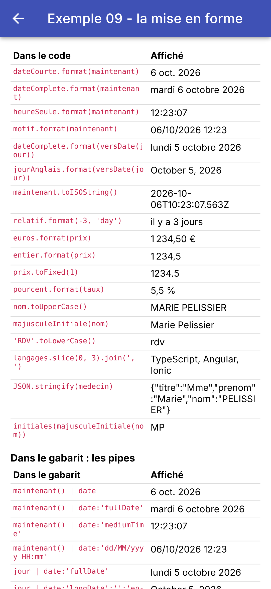 | 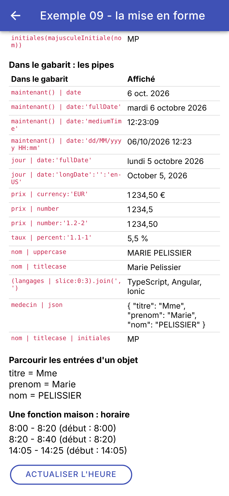 |
Pour les dates, les nombres et les montants, l'API [Intl] et les pipes d'[Angular] jouent le rôle du paquet [intl] de [Flutter] : ils connaissent les conventions de chaque langue (séparateurs, noms des mois, ordre des parties). On remarquera, en français, l'espace fine insécable qui sépare les milliers (1 234,50 €), et l'ordre « jour mois année ». [Flutter] n'avait pas de mécanisme propre à la mise en forme : on appelait des fonctions dans [build]. [Angular] offre les deux : des fonctions dans le code, et des pipes dans le gabarit, réutilisables, chaînables, et mémorisés.